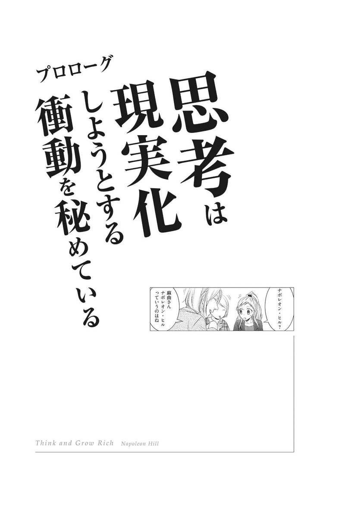
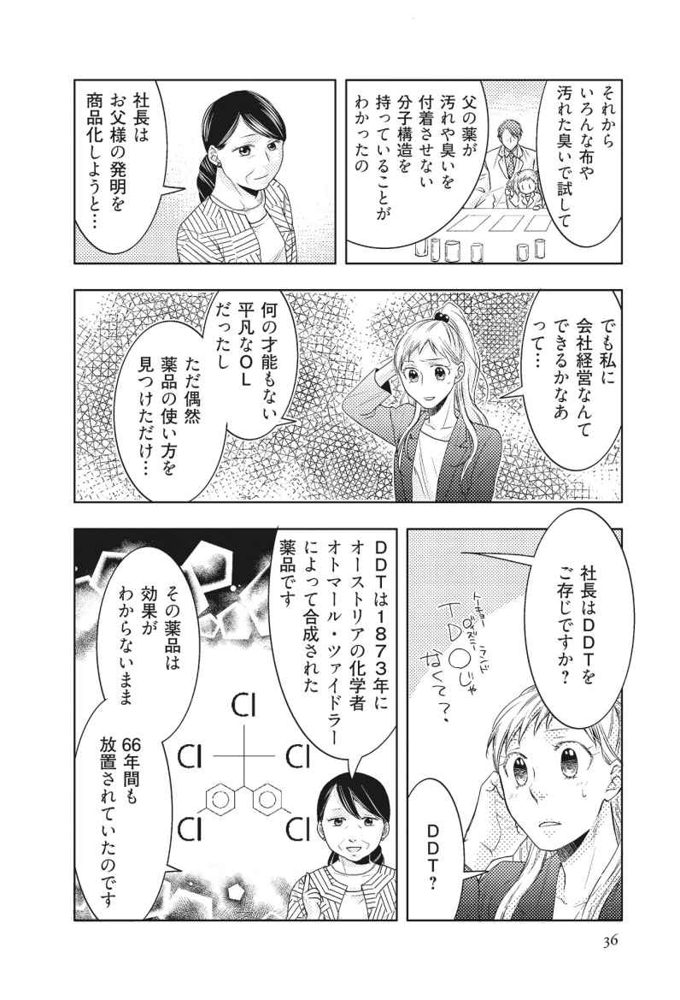
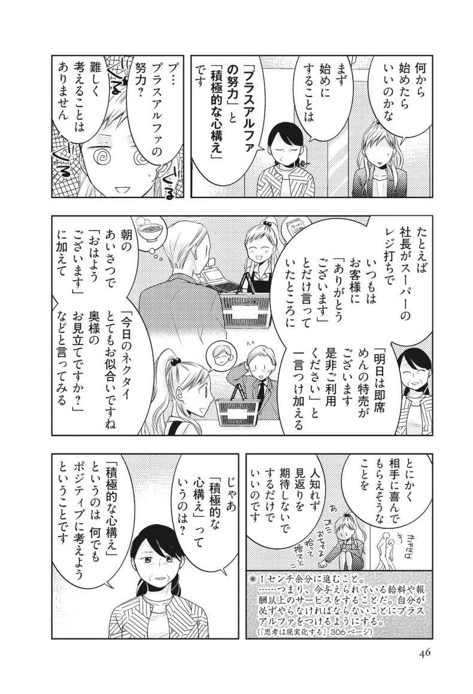
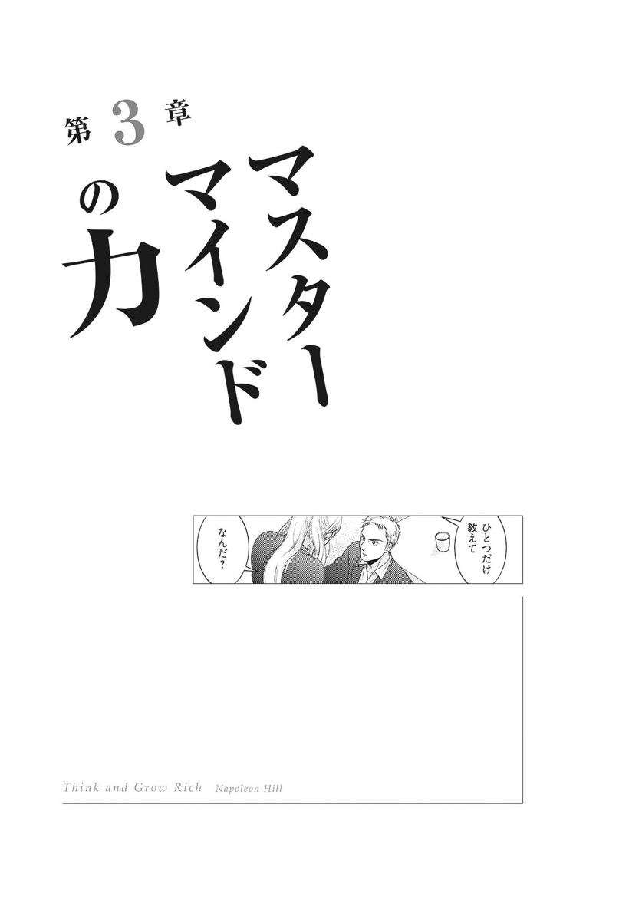
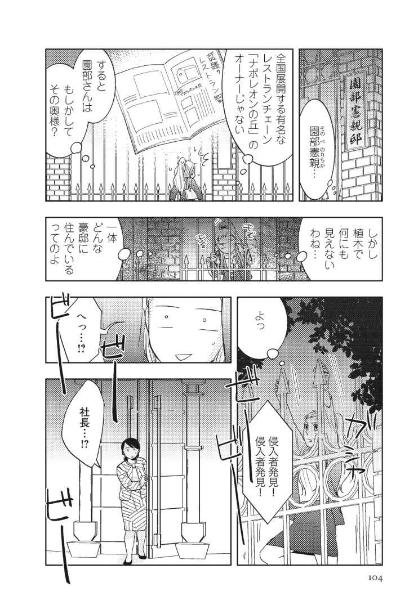
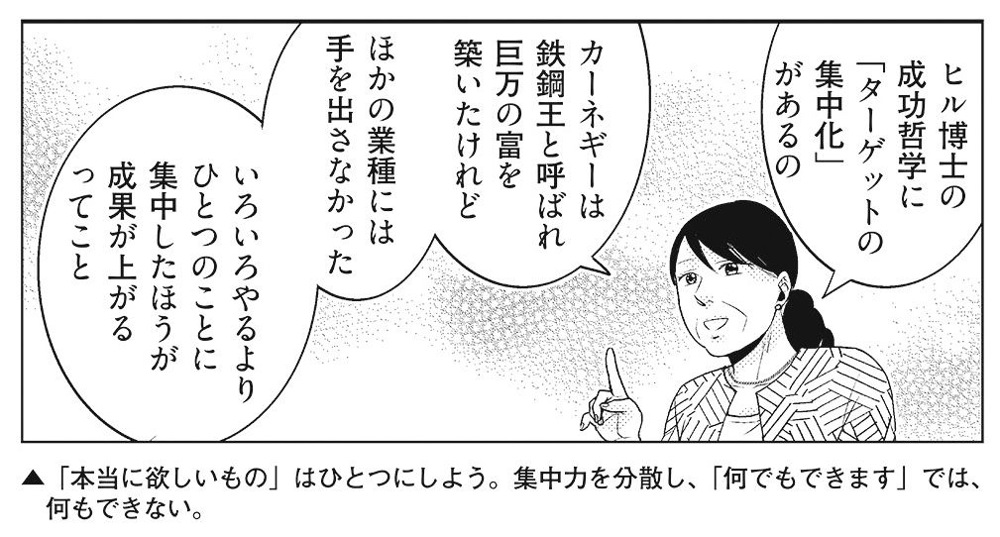

| まんがで納得 ナポレオン・ヒル 思考は現実化する | |
| ナポレオン・ヒル財団 アジア/太平洋本部 | |
| kikoshobo (2016) | |
ナポレオン・ヒルについて
ナポレオン・ヒル（Napoleon Hill）
1908年、駆け出しの雑誌記者時代に、アンドリュー・カーネギーと出会う。カーネギーの要請で万人が活用できる成功の秘訣の体系化に着手。カーネギーの尽力もあり、著名な500名以上の各界成功者が共同作業に携わる。
20年後の1928年、初期プログラム完成。そして実践の場での有効性を調査し、再び検討を重ねて52年後の1960年に、ついにPMAプログラムを完成（80年後の1988年に初版完成。日本語版はこの新版による）。
この間、ウッドロー・ウィルソン大統領の広報担当補佐官、フランクリン・ルーズベルト大統領の顧問官を務める。また、講演家としても活躍。大富豪のひとりとしても、その名を残している。
ナポレオン・ヒル財団設立後、1970年87歳で没。
本書は特に注記がない限り、『思考は現実化する（上製版）』（ナポレオン・ヒル著 田中孝顕訳 きこ書房）を引用・参照しています。
参考資料
『図解 思考は現実化する――金持ちビジネスマンになるための17の方程式（ゴールデンルール）』（田中孝顕監修 ナポレオン・ヒル財団アジア／太平洋本部編 きこ書房）
THINK AND GROW RICH Manga Edition
Copyright©2015
published by SSI Corporation. arranged with Napoleon Hill
Foundation Asia/Pacific Headquarters.
Based on the book:
THE THINK AND GROW RICH ACTION PACK
by
Napoleon Hill
Copyright © MCMLXXII by Napoleon Hill Foundation
New & Revised Edition Copyright © 1996
By The Napoleon Hill Foundation
ALL RIGHTS RESERVED
Japanese translaion rights arranged with
The Napoleon Hill Foundation
through SSI Corporaion.
登場人物紹介
内山麻由（27）
大手商社のＯＬとして雑務をこなす日々にあきたらず、起業を決意。父が残した薬品の有効活用法を見つけ、それをヒット商品にすべく、奮闘する。セミナーで知り合った女性、園部直美が提唱するナポレオン・ヒルの成功哲学を信じ、園部と二人三脚で、成功への階段を駆け上がる。
園部直美（52）
ナポレオン・ヒルの『思考は現実化する』に傾倒しているエネルギッシュな実践派マダムだが、その正体は謎。麻由に近づき、共に事業を成功させるため、奮闘する。
松岡実（35）
松岡薬品製造工場社長。大学教授だった麻由の父のもとゼミ生でイケメン。小規模工場ながら、独自の工夫で効率性を最大限に引き出す経営手腕を持つキレ者。直美との謎の関係から、麻由の事業のマスターマインドとなる。
木山努（63）
ＫＣ製作所社長。
鈍木潘三郎（50）
ディスカウントストア「サンチョ」商品開発部長。
大手商社お局連合
麻由のかつての職場の先輩。
大谷元（65）
町工場「車坂工業」社長。
まんがで納得 ナポレオン・ヒル
思考は現実化する 目次
プロローグ
思考は現実化しようとする衝動を秘めている
第１章
プラスアルファの魔法
第２章
逆境はチャンス
第３章
マスターマインドの力
第４章
決してあきらめない
第５章
シンプルなアイデア
エピローグ
最後に勝つのは「私はできる」と思える人
きこ書房・毎朝届く無料メールマガジン『成功の黄金律』登録はこちらから
 Facebook
Facebook

解説❶ Ｐｒｏｌｏｇｕｅ
思考は現実化しようとする衝動を秘めている
大富豪と記者との出会いが世界を変えた。
「ねえ、園部さん、ナポレオン・ヒルって何をした人なの？」
「簡単にいえば、〈成功哲学〉を体系化した人でございます。ヒル博士は25歳、駆け出しの雑誌記者時代に、鉄鋼王として知られていたアンドリュー・カーネギーを取材しました。そのときに、誰でも成功できる法則を体系化することを要請されたのでございます」
「へえ、すごいことを考えてたんだ」
「さようでございます。カーネギーは自分の体験を語っただけでなく、５００人以上の成功者をヒルに紹介しました。彼らを取材することで、人が成功するための法則が存在し、それを実践すれば、誰でも成功できることを証明させ、その成功哲学を世界に広めようとしたのでございます。そのために、ヒル博士には20年の歳月が必要だったのです」
「20年で５００人......すごい！」
◆ヒルの生い立ち
ナポレオン・ヒルは１８８３年10月26日、アメリカ合衆国のバージニア州南西部、ワイズ郡で生まれた。ナポレオンという名前は、金持ちの叔父の名に由来したものだが、皇帝ナポレオンにあやかったものでもあった。
父親は鍛冶屋で、ごく貧しい家庭で育ったが、転機となったのは、９歳のときに母を亡くしたことだった。父が再婚した相手、ヒルにとっての継母は、彼に多大な影響を与えた。のちにヒルは、「私の人生にとってこの世界で最も素晴らしい影響を与えてくれたのは、この継母と妻だ」と述懐している。
まず、継母はヒルの父親を成功者にした。自分の入れ歯を直した夫の腕を見込んで、歯医者に仕立てたのだ。正式な歯医者になるためには、歯科大学を出ることが必要だとわかったときも、「もう終わりだ。歯医者は廃業だ」と落胆する夫を励まし、前夫の生命保険を学費に使って一人前の歯医者にしたのだ。
◆カーネギーとの出会い
15歳のとき、ヒルは継母の勧めで地方新聞社へ記事を売る仕事を始めた。ヒルは成功し、一時は16社に記事を送っていたという。
そして25歳のときに弁護士になるつもりでジョージタウン法科大学に入学した。学費を稼ぐために成功者たちに取材した記事を掲載した雑誌を刊行しようと考えて、最初に取材したのが、鉄鋼王として大成功を収めていた当時73歳になるアンドリュー・カーネギーだったのだ。それが運命の出会いとなる。
カーネギーは３時間、話をした。「ソクラテスやプラトンの時代から多くの哲学が生まれたが、それはおもにモラルについてのもので、現代には、巨富を築く哲学が必要だ。私が人生を通じて学び、編み出した成功のノウハウは誰もが活かすことができるはずだ」と主張した。
さらにカーネギーはヒルを自宅に招き、３日３晩、熱弁をふるった。そして最後にヒルに「もし私が〈成功哲学〉をひとつのプログラムにする仕事を頼んだら、君はどうするかね。君がインタビューすべき５００人は私が紹介する。この成功プログラムの編纂には20年の調査が必要だが、君はその仕事をやる気があるかね？ イエスかノーで答えたまえ」と迫ったのだ。
さらにカーネギーは「ただし、僕から君への金銭的援助は一切しない。それでいいかね？」と畳みかけた。
ヒルの答えは「イエス」だった。こうしてヒルは成功哲学を体系化する仕事をすることになったのだ。
◆ヒルの20年間
ヒルがこの話をすると家族や周囲の人々は皆、大反対した。唯一賛成してくれたのは、継母だった。「お前だったら必ずできるよ。がんばってやりなさい」。その言葉に励まされてヒルの20年が始まった。
ヒルはまず、カーネギーの勧めでヘンリー・フォードという男に会った。フォードは寡黙でほとんどイエスかノーしか言わない男だったが、世界初の大量生産車「Ｔ型フォード」を売ろうとしていた。世間はこの車には懐疑的だった。しかし、５年後には世界中がＴ型フォードで埋め尽くされることになる。
ヒルはフォードを皮切りに、５００人の成功者に協力してもらい、ついに、20年後の１９２８年にカーネギーとの約束を果たし、〈成功哲学〉を体系化した。その後、出版した『思考は現実化する』は、全世界で１億部を売る大ベストセラーになり、多くの成功者を生むのだった。
◆カーネギーの真意
ヒルとカーネギーの出会いは偶然ではなかった。当時73歳だったカーネギーは全財産をすべて社会貢献のために費やすことを決心していた。そして実際に20億ドルを寄付などで社会のために使った。しかし彼は、それだけでは足りないと思っていた。自分の最も価値ある財産は、自分が編み出した成功哲学であると考えていたからだ。「成功哲学を体系化し、人々に活用してもらえれば、万人が巨富を築くことができる。どうしてもその哲学を残したい」、そう考えてカーネギーは、成功哲学を体系化してくれる人物を探していたのだった。そして２６０人以上の人にこの仕事を持ちかけ、唯一カーネギーのメガネにかなったのがヒルだったのだ。
また「20年間の調査が必要」と考えたのは、カーネギーが紹介する５００人の成功者たちの中には、まだ成功者として認知されていない人も多く含まれていたからだった。その人たちが20年間にわたってどうやって成功を手にするか観察することも、重要な仕事だったのである。
さらに「金銭的な援助は一切しない」と宣言したのも、「ヒルはすでに自分の成功哲学を知っている。だから、必ず成功するはずだ。そう確信しているので援助などは必要ない」という信念に基づくものだった。
◆その後のヒル
ナポレオン・ヒルは第一次世界大戦の頃には、ウッドロー・ウィルソン大統領の広報補佐官として仕え、50歳になった１９３３年から３年間、フランクリン・ルーズベルトの補佐官を務めている。ヒルは大恐慌時代を乗り切ろうと腐心する大統領を補佐し、演説の草稿を書くなど、活躍した。
54歳のときには、『思考は現実化する』（"Think and Grow Rich"）を発行し、ラジオ放送や企業コンサルタントの仕事を通じて、〈成功哲学〉の普及に努めた。さらに保険会社の経営者で大富豪のＷ・クレメント・ストーンを後継者とし、１９６２年には「ナポレオン・ヒル財団」を設立している。そしてヒルは、１９７０年11月８日、87歳でその輝かしい生涯に幕を閉じたのだった。
ゴールデンルール01
明確な目標の設定
「成功への第一歩は、まず目標を定めることでございます」
「そうね、たしかにゴールのない道を走ることは無意味だわ」
「そのとおりでございます。そして目標があっても、その目標が正しいのかどうかを見直す必要があります」
「私の今までのＯＬ生活がそうだった。お局様に気に入られようとか、上司に気に入られようとか、そういうことばかりがいつの間にか目標になってしまって......」
「しかし、そのような目標では、人生の成功者になることはできません」
「でも私に、正しい目標なんてあるのかしら」
「目標は、できるだけ具体的なほうがいいのです。お父様が発明した薬品を商品化して世間に認めてもらう。素晴らしい目標ではございませんか」
「うん、私やってみる！」
◆目標の明確化が夢の扉を開く
思考は現実化しようとする衝動を秘めている。その衝動は、強力なエネルギーを持っている。それゆえ、思考が明確な目標、忍耐力、あるいは強い願望とあいまって成功に向かって作用し始めるとき、思考は強烈な実体となる。これはヒル博士の言葉だが、目標があり、それを達成しようという強い願望があれば、それは実現するということを示している。
強い願望が実現した例としてヒル博士は、発明王と呼ばれたトーマス・エジソンと共同事業を実現したエドウィン・Ｃ・バーンズという男を挙げている。
彼はエジソンの共同事業者になりたいという燃えるような願望を持っていた。しかし、バーンズは何から手をつけていいか、さっぱりわからなかった。それどころか、「まだ一度もエジソンに会ったことがない」「エジソンの研究所があるニュージャージー州イーストオレンジまでの汽車賃がない」という問題を抱えていたのだ。
たいていの人なら、こういった障害があると願望が萎えてしまうものだが、バーンズは、エジソン研究所になんとかたどりつくと開口一番、「エジソンさん、私はあなたと共同で事業を行いたくて、こうしてはるばるとやってきました」と言ったのだ。
エジソンはこのときの感想を後年、次のように述べている。
「バーンズはまるで浮浪者のような姿で私の前に現れてね。びっくりしたもんだよ。でも彼の表情から、この男は一度決心したことは必ずやり遂げる、という気性を持っているな、と見て取ったんだ。彼と一緒に事業をしてわかったことは、バーンズは手に入れたいものがあれば、その願望に自分のすべてを賭け、その結果、必ず勝利を収めるという素晴らしい『脳力』を持っていることに尽きるね。あるとき、そんな彼を見て、私は彼が求めているチャンスを与えてやろうと思ったんだ。彼が信念を貫く決意を持っていることがよくわかったからなんだが......。もちろん、そのときの私の判断は間違っていなかったよ」
◆チャンスを活かしたバーンズ
もちろん、最初からバーンズは共同事業ができたわけではなく、安い賃金で雇われていた。いつまでたっても彼の願望が達成される気配はなかったが、バーンズの決意はますます強くなる一方だった。
そしてついにチャンスがやってきた。エジソンはその頃、「エジソン式蓄音機」と呼ばれた新製品を完成したばかりだったが、エジソン研究所のセールスパーソンたちは、よほど努力しないと、この製品は売れないと決めてかかり、熱意を示さなかった。
バーンズは自分にチャンスが巡ってきたと感じ、蓄音機のセールスに駆け回ったのだ。その結果、蓄音機は飛ぶように売れた。あまりにも売れたのでエジソンは、彼との間で蓄音機の全国独占販売契約を交わすことになった。こうしてバーンズの、エジソンと共同事業をするという願望は実現したのだ。バーンズがこの共同事業で得た金は、当時の金額で８億円とも12億円ともいわれている。
しかし、彼が手にした真の財産は、金銭には代えることのできないものだった。その財産とは、成功の原則を活用することによって、目に見えず、手で触れることもできない思考が物理的な報酬に変わりうるという事実を知ったことだったのだ。
バーンズはエジソンの共同事業者となり、莫大な富を手に入れることもできたが、彼が持っていたものは、明確な願望を達成するまでは決してあきらめないという固い決意だけだった。
29秒の決断エピソード
１９０８年秋、ナポレオン・ヒルが「ボブ・テイラーズ・マガジン」という雑誌に、成功者たちの記事を書くため、当時ピッツバーグに住んでいた鉄鋼王アンドリュー・カーネギーのもとを訪れたときのことです。そのときヒルは25歳、カーネギーは73歳でした。３時間のインタビューのあと、３日３晩カーネギーはヒルのために時間を融通し、こう切り出したのです。
「さて、私は君に３日間も『新しい哲学』の必要性について話をした。ここで、私から質問がある。もしこの私がこの『新しい哲学』をひとつのプログラムにする仕事を君に頼んだら、君はどうするかね。もちろん、協力者や君がインタビューすべき人たちには、紹介の手紙を書いてあげよう。とりあえず５００名だ。この成功プログラムの編纂には20年間の調査が必要だが、その間、君はこの仕事をやる気があるかね？ イエスかノーで答えたまえ」そして、こう続けた。「ただし、私から君への金銭的援助は一切ない。それでいいかね？」と。そのときヒルは、世界一の金持ちのために20年間もタダ働きをするのかと思った。普通の人なら断るだろうし、ヒルも断ろうとした。しかし、考え直して「イエス」と答えたのだ。
するとカーネギーはポケットからストップ・ウォッチを取り出してこう言ったのだ。
「29秒。君が答えを出すまでに29秒かかった。私は１分を超えたら君を見込みのない、ただの人間としてあきらめるつもりだった。この種の決断というのは、１分以内に出せる人間でなければ、その後、何をやらせてもダメなものなんだよ」
つまり、これは一種のテストだったのだ。じつはカーネギーは、ヒル以前に２６０人以上の人に同じ話を持ちかけていたのだが、全員失格だった。このエピソードは即断即決がいかに大事かを物語っている。


解説❷ Ｃｈａｐｔｅｒ01
プラスアルファの魔法
成功の「代償」は１センチ余分の努力。
「目標はできたけれど、成功するためには、どうしたらいいの？」
「１センチ余分に進むことです」
「どういうこと？」
「たとえば、社長が時給１０００円の仕事をしているとします。しかし、１０００円分の仕事をしていたのでは、成功はしません。評価もされず、これ以上報酬が増えることもありません」
「そっか、もらっている報酬以上の仕事をする。それが成功への第一歩っていうことね。でも、何をしたらいいんだろう？」
「難しく考えなくていいんです。たとえば、自分がしてほしいことを相手にする。それだけで１センチ余分に進むことになるのです」
「つまりそれが、成功への代償ってことね」
ゴールデンルール02
プラスアルファの努力
◆印刷会社の社員のケース
１センチ余分に進むこと。ナポレオン・ヒル博士と後継者であるＷ・クレメント・ストーンは、これをプラスアルファの魔法と呼んでいる。
１センチというのはもちろん比喩だ。つまり、今与えられている給与や報酬以上のサービスをすることだ。自分が必ずやらなければならないことにプラスアルファをつけるようにする。ビジネスパーソンなら、会社があなたに要求している以上の仕事をこなすような働き方をすることだ。ヒルは具体例として、ふたりの人物を挙げている。
大きな印刷会社で見積もりを担当する若い社員がいた。彼は、客が書体のことであまり注文をつけなかったので、そのことに注意を払わずにいた。だから彼の仕事は楽だった。しかしそれでは、本当に仕事を知っている人間としての彼を特徴づけるものが何もない。ヒルはそのことを彼に指摘したのだ。そこで彼は編集の勉強を始めた。それによって得た知識は、やがて印刷物の出来具合に影響を与えるようになった。そして顧客から、仕上がりの美しさを注目されるようになったのだ。客先から「とてもきれいな印刷物を作ってくれたね」との褒め言葉をもらい、それで彼の上司は、この若い社員が会社の評判を高めてくれたことに気づいた。
この若い社員は、それまでは会社でほとんど注目されていない人間であったが、今ではこの会社の重役になっている。彼は、プラスアルファの魔法を用いることによって、ちっぽけな給料とちっぽけな人間になることから自分自身を救ったのだ。
◆衣類売り場の女性
こんなケースもあった。衣類売り場に勤めていたある女性は、自分の給料とわずかな歩合では、棚にあるものをいつもどおりに売っていればそれで十分だと思っていた。どうしてタダで余計に働いて経営者の得になるようなことをしなければいけないのか。そんなことをする必要はまったくないというのが、彼女の常識だった。
しかし、ある日のこと、ひとりの女性客が、ある品物の在庫がないか調べてほしいと頼んだ。その頼み方が感じよく、また、あまりに熱心だったので、いつもなら「ありません」ですませてしまっていたのに、彼女は探しに行ったのだ。そしてやっとのことで、その品物を見つけ出したとき、彼女は満足感で「胸の中がふくらんだ」ような気がしたという。
それ以降、彼女は自分にとって大して利益にならなくても、客のために進んで仕事をするようになった。客に売り場で陳列されていない商品を教えたり、特別に取り寄せたりするように心がけるようになった。
まもなく彼女には固定客がつくようになった。客たちは、彼女に対応してもらうために、喜んで待つようになった。その上、仕入れ係は彼女の商品知識に頼って彼女の判断を求めてきた。彼女は当然のように仕入れ担当に昇進し、輝かしいキャリアが目の前に広がる新しい世界を手に入れることができたのだ。
１センチ余分に進むということは、それ自身が強壮剤のように推進力の役目を果たすことになるのだが、自分のなすべきこと以上のことを進んでやろうという積極性は、富を得る人間、優れたリーダー、幸せで心豊かな人間につけられる存在証明のようなものであり、そういう人々は、一日一日、人生に価値を築き上げているのだ。
◆報酬以上の仕事をする
プラスアルファの努力をすること。これを実践すれば、報酬以上によい仕事をすることによって、奉仕する精神を養うことができる。それがまた優れた技術と「脳力」を発達させるばかりでなく、仕事そのものに熟達し、高い評価を得ることになるのだ。それはまた、究極的には高い収入となって表れてくるのである。そうすれば、現状から抜け出すこともできるし、そのことについて誰もあなたを止めることはできない。
雇われている身であったとしても、あなたが報酬以上の仕事をしていれば、職場では非常に重宝される。出世のチャンスも当然出てくる。もし経営者があなたの力を認めなかったら、自分で自分の賃金を決めればいい。つまり、別の雇い主のところへ転職すればよいのである。
世の中には、できるだけ少なく仕事をして、より多くの報酬を望んでいる人が少なからずいる。そうした事実は、報酬以上の仕事をする意欲を持った人にはたいへん有利だ。比較されることで得するからだ。たしかに、仕事の中には怠けようと思えば怠けられるものもある。
だが、怠けていれば、それ以上のものは決して得られない。世の中の景気見通しが暗くなり、人員整理が始まれば、怠けものが真っ先に肩をたたかれることになる。
ヒルは半世紀以上にわたって研究を重ねてきた結果、報酬以上の仕事をしてきた人は報酬以下の仕事しかしていない人よりも高い地位につき、高い報酬を得ているというきわめて単純な結論に達している。しかもこの原則は、雇われている人だけでなく、スペシャリストや独立している人にも立派に通用する原則なのだ。
この原則を守る人は二重の報酬を得ることができる。まず第一に、多くの物質的報酬が得られること。第二に、幸福と満足感が得られるということである。給料袋の中身だけが報酬のすべてだと思っている人は不幸だ。給料袋の中身以外の報酬が、人に幸福感と満足感を与えてくれるのだ。
◆フォードの最低賃金制度
ヘンリー・フォードは、量産型の自動車メーカーの創始者だが、彼は、工場で働くすべての労働者に対して、１日最低５ドルの賃金を保証した。その金額は当時の平均賃金を上回っていた。彼がこの制度を作った理由は、決して温情主義や博愛主義気取りからではない。最低賃金を決めることで労働者の収入を保証することができれば、そのことが労働意欲へのよい刺激になると考えたからだった。つまり、合理的なビジネスの原則を適用したのである。
雇用者が平均以上の賃金を支払うことで、フォードは平均以上の質と量の労働を手に入れることができた。最低賃金制度を採用することで、フォードの工場には史上最高の良質の労働者が集まってきた。フォードの工場で働くことは労働者の誇りとなったのだ。ある推定によれば、フォードが支払った５ドルに対して、少なくとも７ドル50セント分、余分の労働力をフォード社は受け取ったといわれている。
さらに工場には、ちゃんと仕事をしているかを見張る監督が必要だったが、フォードの工場では労働者の質が向上していたから、監督という存在が不必要になり、その多額な費用が削減できた。
フォードは、プラスアルファの魔法の実効性を、雇用者の側からも実証してみせたのだ。
◆ダウンズのプラスアルファの魔法
キャロル・ダウンズは自動車メーカーのデュラントという人のもとで働いていた。ダウンズは初めは重要でない地位にいたが、やがてデュラントの右腕となり、のちに系列の自動車販売会社の社長になっている。この成功もプラスアルファの魔法によって得られたものだった。ヒルの「どうしてそんなに早く昇進できたのか」という質問に、ダウンズは次のように答えている。
「デュラント氏のもとで働いていたとき、私はあることに気がつきました。それは、社員全員が退社したあとでも、氏だけが遅くまで残って仕事をしていたことでした。それで私も残って仕事をするようにしたのです。誰に頼まれたわけでもありませんが、誰かがそばにいて、デュラント氏が必要とする手伝いをしなければならないと考えたからです。というのは、デュラント氏がよく、『誰か手紙のファイルを持ってきてくれないか』とか、『ちょっと誰か手伝ってくれ』と言って、周りを見渡している姿を見かけていたからです。いつの間にか私は、その『誰か』の役目を果たしていたわけです。それでデュラント氏は私を呼ぶ習慣がついてしまったのです。理由はそれだけです」
「私を呼ぶ習慣がついてしまった！」この言葉を噛みしめていただきたい。この言葉には深い大きな意味がある。デュラントには、なぜ「ダウンズ」の名を呼ぶ習慣がついてしまったのだろうか。それはデュラントが「誰か」を呼ぼうとしたときに、いつもそこにダウンズがいたからだ。しかもただいただけでなく、役に立とうという心構えでそこにいたからだ。
ダウンズは誰かに命令されて、残っていたわけではなかった。また残ることによって給料を得ていたわけでもない。しかし、報酬はあった。それは、彼を昇格させる権利を持つ男の「注意を引く機会」を得たことだった。チャンスが報酬になったのだ。
しかし、あなたはこう言うかもしれない。「私の上司は違うんだ！」「私の場合は違うんだ！」違っていて当然だ。人間は誰でもすべての点で違っているものなのだ。しかし似ているところもある。 あなたにダウンズそっくりなことをやれと勧めているわけではないが、その方法論には学ぶ点があるだろう。経営者、あるいは上司が、あなたなしではやっていけないと思えるほど、役に立とうと思う心があなたにはあるだろうか。
ダウンズが職場に残っていたのは、義務としてではなく、特権としてだった。ダウンズがその特権を正しく使ったために、彼は大きな責任と巨額の年収を得ることができたのだ。
１日１時間、給与の対象となっていない仕事に従事することだ。そうすれば、単に義務を遂行しているだけから得る収入よりも、もっと大きな収入が得られるのだということを常に心がけておくべきだろう。
自ら進んで労働強化の火の中に飛び込むものなどどこにいるものか（ただでさえ労働強化なのに）と考えるなら、将来の明るい夢など期待しないことだ。これは労働強化の考え方とはまったく違う発想から出た原則であり、したがってその結果もまったく異なることに注目しよう。
ゴールデンルール03
積極的な心構え
「ねえ、園部さん、ヒルの願望実現のための６カ条だけど、もう一度詳しく教えて」
「６カ条は、ヒル博士が鉄鋼王カーネギーから直々に伝えられた秘伝です」
「へえ、カーネギーから......」
「カーネギーはもともと、貧しい鉄鋼所のひとりの労働者にすぎなかったのですが、この６カ条を座右の銘として、世界でも稀にみる巨富を築き上げたのです」
「この６カ条の素晴らしさは、お金を得るためだけに役立つのではなく、ほかのあらゆる願望を実現するためにも役立つことです」
「万能ってこと？」
「さようでございます。かのエジソンによって実際に試され、実効性が証明されています」
「恋の実現にも？」
「もちろんです！」
◆願望実現のための６カ条
❶あなたが実現したいと思う願望を「はっきり」させること。
＊単にお金がたくさん欲しいなどというような願望設定は、まったく無意味なことである。
❷実現したいと望むものを得るために、あなたはその代わり何を「差し出す」のかを決めること。
＊この世界は代償を必要としない報酬など存在しない。
❸あなたが実現したいと思っている願望を取得する「最終期限」を決めること。
❹願望実現のための詳細な計画を立てること。そしてまだその準備ができていなくても、迷わずにすぐに行動に移ること。
❺実現したい具体的願望、そのための代償、最終期限、そして詳細な計画、以上の４点を紙に詳しく書くこと。
❻紙に書いたこの宣言を、１日に２回、起床直後と就寝直前に、なるべく大きな声で読むこと。このとき、あなたはもうすでにその願望を実現したものと考え、そう自分に信じ込ませることが大切である。
これが、ヒルがカーネギーから直伝された、願望実現のための６カ条だ。まず第１条は説明不要と思われる。目標のないところにゴールはないからだ。ただし、ここで書かれているように、単にお金がたくさん欲しいといったような抽象的な目標では意味がない。「お金がたくさん欲しい」のように目標が抽象的だと、何をやっていいのか、具体的な行動が明確にならない。本業を頑張るのか、副業をして儲けるのか、新たに起業するのかなど、選択肢がありすぎて次の行動が決められないのだ。しかし、「主力商品の売り上げを２倍にする」という具体的な目標だったら行動が明確になる。「市場を拡大する」「見込み顧客リストを集める」「商品の魅力をアピールできるツールを作る」など、すぐに行動へ移せるのだ。
第２条は、願望実現のために払う代償を自覚し、あきらめずに努力する覚悟をするために必要なものだ。成功するために代償は必要だ。
第３条は、当たり前のことだが、期限がないと人は動かない。だから最終期限を決める必要がある。
第４条で一番大切な教訓は「まだその準備ができていなくても、迷わずにすぐに行動に移る」ということだ。何十年もかけて描いては消し、消しては描いてひとつの芸術作品を完成させたりすることはある。しかし実生活では、「迷わずにすぐに行動に移ること」が成功への秘訣であることは間違いない。失敗したらやり直せばいい。仕事ができる人は例外なく、即断即決して行動に移っている。
第５条は、第４条までを自分で決めて、それを反復するために紙に書くこと。これは次の第６条につながってくる。
◆最重要な第６条
願望実現のための６カ条の中で一番重要なのは、第６条だとヒルは述べている。つまり、「自分の願望を実現したものと考え、そう自分に信じ込ませること」が最重要だと述べているのだ。ヒルはこう続ける。
とはいえ、まだ手にしていないお金をすでに手に入れたものと信じなさいと言われても、そんなことは難しいと思う人がいるはずだ。しかし、ここが肝心なところなのである。
巨富を築くことを執念とも言えるほどに強く願望すれば、あなたが実際そのようになるという確信を持つことは、決して難しいことではない。要はお金が欲しいと願い、必ず手に入れるのだという強い意欲を持ち、そして自分自身でそれを必ず手に入れると確信することである。富豪になった自分の姿を頭の中で明確に想像すること、そうすれば、その実現はもう保証されたようなものである。
◆積極的な心構えの力
富というものは、とても恥ずかしがり屋で、その上、なかなかつかまえにくいものである。したがって富は、好きな女性を必死になって追い求める男性（逆も同じ）と同じように、情熱を持ってまっしぐらに求め、勝ち取らなければならない。
偶然のように見えるが、富を求めるエネルギーと、異性を求めるエネルギーとはほとんど同じなのだ。そのエネルギーが富であれ何であれ、願望や目標を得るために効果的に発揮されるとき、そこに必然的な信念が芽生えてくる。エンスージアズム（熱意）も忍耐力も生じてくる。そればかりでなく、計画やそれを実現させるための実行力さえも生まれてくるのである。
大金が実際に手に入ってくるときは、それはまるで洪水が押し寄せてくるかのようである。それは目に見えない巨大なエネルギーの流れである。まるで大河の流れのようだ。だがこの流れは、普通の川と違ってひとつの川の中にふたつの流れを持っている。一方の流れに乗ると、どんどん金持ちになる。しかし、反対側の流れに乗ると、どんどん惨めに、貧乏になっていく。莫大な富を築き上げてきた人々は、皆、この人生の流れを目のあたりにしてきたことであろう。この貧富の分かれ目は、その人たちの「考え方の違い」によるものである。
この点についてはヒルとＷ・クレメント・ストーンの共著である『心構えが奇跡を生む』を読むといいだろう。積極的な心構え（ＰＭＡ）を持つ人は、幸運をもたらす流れに乗る。反対に、消極的な心構え（ＮＭＡ）しか持たない人は貧困の流れに乗って、それに巻き込まれてしまうのだ。
◆貧困を富に入れ換えるには......
富を築くために本書を読まれる人にとって、この考え方は非常に重要な問題である。もし、貧乏の流れの中にいるのであれば、この本やナポレオン・ヒル・プログラムは、富への流れに乗り換えるためのカジの役目を果たす。このカジを上手に使っていけば、あなたは必ず救われるはずだ。そのためにも、本書やナポレオン・ヒル・プログラムを熟読したり熱意を持って聴いていただきたい。単に読み返し、聴き流すだけでは、流れを乗り換えることはできない。
貧困と富は、しばしばその位置が入れ換わることがある。富が貧困を追い出してしまうときというのは、深い思索と具体的かつ明確な計画があるときである。貧乏になるには計画はいらない。誰の助けも不要である。なぜなら、貧乏は大胆かつ冷酷で、誰に対しても（あなたも例外ではない）容赦しないからだ。逆に富は小心で臆病だ。だから十分な保護が必要なのである。

解説❸ Ｃｈａｐｔｅｒ02
逆境はチャンス
問題解決への情熱がチャンスを呼び込む
「園部さんが２０００万円も借金してたなんて、信じられない！」
「事業に資金は、必要不可欠なものでございます。これでも利息はギリギリの低利融資なのです」
「このままじゃ、月々の返済がとてもできないわ」
「このような逆風、逆境はチャンスなのです。社長はどうやったらこの逆境を切り抜けられるとお考えですか」
「ウ～ン、販路を拡大するしかない。それも大口の販路を」
「社長に何か伝手はございますか」
「...ひとつだけ、私が前にいた会社。かっこ悪いけど、この会社が潰れるのは絶対いや！ 課長に頼んでみる。それで決定権のある専務につなげてもらうわ」
「それです。借金の返済ができない、これは逆境です。しかし、これを乗り切るために、販路の拡大というチャンスが現れたではありませんか」
「そうね！」
......
「話はわかった。たしかに売れる可能性はある」
「扱っていただけるんですか？」
「だが、うちのグループで扱うためには月、10万個供給してもらわないと。それが条件だ」
「園部さん、一難去ってまた一難よ。月産１万５０００個がやっとなのに」
「また逆境でございますね」
「何よ、園部さん、うれしそうに」
「逆境はチャンスですよ！」
「あ、そっか、ここで協力工場を増やすことができれば、事業は一気に拡大する！」
ゴールデンルール04
逆境からの利益
◆逆境の中に利益の種子
「失敗や逆境の中には、すべてそれ相応かそれ以上の大きな利益の種子が含まれている」この文言は、『思考は現実化する』の中心テーマのひとつである。カードに書き、それをいつもポケットに入れておいて、毎日読んでほしい。
この一連の行為をアファーメーションと呼んでいる。「自己宣言」という意味で、自分自身に対して常に言い聞かせる言葉そのものを指す場合もある。さて、この文言には、多くの人間の心の平安を解くカギが入っている。この言葉をあなたの潜在意識にしっかり埋め込んでほしい。
後悔や苦い思い出、悔しさがあるなら、その中から自分や人々のためになる利益を引き出すことを考えよう。それは必ずある！
◆「時」は失敗や逆境をダイヤモンドに変える
いやな経験、失望、挫折の経験などマイナスの心の扉を閉じよう。そうすれば、素晴らしい魔術師である「時」が、過去の苦しみや失敗を瞬時に消し去ってしまい、代わりに成功や幸福を得るチャンスを与えてくれるのだ。
クヌート・ハムスン（１８５９～１９５２年）はノルウェーからの移民であったが、アメリカでは何をやっても失敗の連続だった。こうして何年かの「時」が経っていった。絶望した彼は、この苦しみを小説にまとめた。題は『飢え』である。そして、彼は１９２０年にノーベル文学賞を受賞する。ハムスンのつらい経験は「時」とともに、逆に富と名誉をもたらすことになった。
ハリー・Ｓ・トルーマン（１８８４～１９７２年）は、メンズ・ウェア・ショップの経営に失敗したが、そのとき自分で自分に失敗者の烙印を押していたら、のちに第33代大統領になることはできなかったであろう。
◆ある男の失敗例
やはり店を経営していた別の男の実例もある。
その店は倒産してしまい、その後男は測量技師になったが、それにも失敗した。彼は自分の測量器具を処分して借金を整理しなくてはならなかった。
次に選んだ職業は兵隊だった。ネイティブ・アメリカンと戦う軍隊に入隊し、そこで隊長の地位をもらった。ところが、軍人としての成績があまりにひどかったので、たちまち兵卒に降格させられ、除隊させられてしまった。
また、ある遺伝子疾患にもかかっていて、異様な顔立ちになってしまっていた。
その後、彼は熱烈な恋をし、婚約した。だが、相手の女性はそれからまもなく死んでしまった。またもや彼は、精神的打撃の中で、のたうちまわらなければならなかった。次に弁護士になったが、弁護士としての活躍ぶりもたいしたものではなかった。
そこで彼は、政治の世界へ進むことにした。落選をくり返し、何度目かの挑戦でやっと当選した。
◆どん底から大統領に
そして最後にこの男は大統領になった。これは思いがけないことだったのだろうか。ある意味ではそうだし、あるいはそうでないとも言える。もし彼が、鎖を引きずっている囚人のように失敗や失望を自分の心に引きずっていたら、大統領にまでなれなかったかもしれない。過去の失敗を引きずっている人は多い。そういう人々は過去という亡霊にとらわれている囚人であって、失敗というイメージを壊すことができないのだ。
その男は、失敗をきっちりと捨て、忘れていった。だからその男の成功は、奇跡でもまぐれでもなかったのだ。これはどんな人間にも許される特権である。大統領になった男は、その特権を活用しただけのことだ。もしその特権を活用しなかったなら、歴史に残るあの偉業は成し遂げることができなかったであろう。もうおわかりだろう。彼の名は、エイブラハム・リンカーンである。
人間は、人生の中で大いなる「プラン」をすべて見通すことはできない。しかし悲しみや失敗や挫折が起こるたびに、それはやがて来たるべき、さらには豊かで素晴らしい経験へと鍛え直され、強化されるものだと考えればよい。なぜなら実際にそうなるからだ！ それは充実させ、報われるものに焼き直すことができる。もしあなたが今現在、失意の状態にいるなら、次の言葉をあなた自身のアファーメ―ションにするためにプレゼントしよう。
「人生には、さまざまな境遇の巡り合わせが絶え間なく起こっているものだ」
◆失恋も逆境のひとつ
あなたには失恋の経験があるだろうか。ヒルは自身の経験をこう述べている。
「これは私も経験したことがある。今思い出しても胸が痛むほどである。私は彼女とたびたび言い争った。愛するがゆえに、とでも言えるかもしれない。だがある日、彼女は私と激しく言い争ったあと、私を捨てて去ってしまった。そして別の男性と結婚してしまったのである。
５年後、彼女の夫は自殺してしまった。夫婦仲はよくなかったらしい。夫は妻との絶え間のない精神的摩擦に耐えきれずに死を選んだのであった。
私はあのつらい失恋の痛手のあとで、（失恋の世界では存在しないことになっている）理想の妻と出会うことができた。もし、私があの女性とそのまま一緒にいたら、今の私は存在していただろうか。やはり私も苦しめられ、死を選んでいただろうか。そうでなくとも、あまりいい人生を送れなかったかもしれない」
何度も言うが、逆境の中にはすべてそれ相応か、それ以上の大きな利益の種子が宿っているのである。
◆エジソンの聴覚障害
トーマス・エジソンは、正規の学校教育はほとんど受けていなかった。保険会社を設立して成功したＷ・クレメント・ストーンは、高校中退である。正規の学校教育を受けなくても成功している人は非常に多い。ということから見れば、学校教育を受けていないことは「ハンディ」とはならないだろう。つまるところ、人間次第ということになる。
エジソンの聴覚障害はどうだろう？ かろうじて聞こえる程度の聴力しかなかったのは、たしかにハンディと言えるかもしれない。しかしこれもまた、その人間次第なのだ。
エジソンは少年の頃、列車の中で売り子をしていたことがある。あるとき、ある男が彼の売っていたキャンディーなどの商品もろとも、彼の耳を思いきり強く引っ張った。そのことが原因で、聴力をほとんど失ってしまったのである。
この過酷な経験を引きずったまま一生をすごしていたかもしれない。他の多くの人々のように、自分のエネルギーをほとんど自分の運命を嘆くことに注ぎ込むこともできたはずだ。しかし彼はそんなことはしなかった。
ヒルがエジソンを訪ねて行ったとき、エジソンは補聴器に頼っていた。今から見れば、ずいぶんと旧式な補聴器だった。お互いに気心が知れたと思えるようになったとき、ヒルはエジソンに「聴力障害は大きなハンディになりませんか？」と聞いたという。するとエジソンの答えはこうだった。
「いやいや、それどころか、耳の聞こえないことで大助かりしていますよ。くだらないおしゃべりを聞かなくてもすみますからね。それで『内なる声を聞く』ことができるようになりました」
身体の不自由さを長所に変えることによって、人間の心の中に潜む神秘的な力に波長を合わせて、それを聞き取る方法を体得したのである。また、自分の心の中から「無限の英知」の声が聞こえるように感じたのである。彼はその無限の英知から実際に多くのものを受け取ることができた。
「逆境の中にはすべて、同等かそれ以上の大きな利益の種子がある」
◆スイッチを「成功」の側に押し倒せ！
ヒルは約３万人の男女を調査して、失敗や敗北に直面したときの忍耐力を確かめたときがあったという。大多数の人はたった１回の挫折で、敗北が身に染みついてしまうことがこの調査でわかった。
次に大きな割合を占めたのは、結果がわからないうちから逃げ出してしまうという人々だった。高い目標を目指しているにもかかわらず、すぐにあきらめて投げ出してしまうのだ。
敗北は、環境や境遇から生じるのではなく、人々が過去から引きずっている敗北感から生じるものだということがこの調査でわかった。過去への扉を閉じる代わりに、機会あるたびにその扉に逆戻りしてしまう。その種の人々の中には、当然ながらフォードやエジソンは含まれていない。
アーサー・デシオという男の名前をヒルは思い出すことがあるという。彼は、財産をすっかり使い果たしたデシオ家の失敗を踏まえて、新たに身代を築いた男である。
実家は、トレーラーハウスの販売店だった。父が死に、その仕事を引き受けたときのデシオはまだ20代だった。父がやってもうまくいかなかった商売を、20代の若者が引き継いだところで、なかなかうまくいくはずがない。たいていの人間なら、すぐに負債を整理し、商売をたたんでケリをつけたことだろう。
インディアナ州エルクハート市の鉄道沿線にあるガレージで事業を始めたデシオは、小型で運搬の簡単なトレーラーハウスを次々に設計した。もちろん、市場調査をして需要を見込んでのことである。それが成功のもとになった。当時としてはまだ世の中に知られていなかったジェネラル・モーターズ方式だ。つまり需要に合わせてのモデルチェンジを頻繁に行ったのである。
販売代理店のネットワーク作りも行った。代理店に４種のトレーラーハウスを仕入れさせ、お互いに競争させた。こうして４年のうちに会社の売り上げは５００パーセントも伸びた。その４年間の儲けは５００万ドルを上回ったという。
その頃の人口構成では、新婚家庭と定年退職した夫婦が大きな割合を占めていた。そのふたつの層がトレーラーハウスの主要購買層であった。もちろん、デシオはそのことを知っていた。トレーラーハウスの製造をそれに合わせたのである。
◆未来形で話をする人々
またヒルの別の調査で明らかになったのは「人生と失敗とのかかわり合い方」だった。多くの人は、過去の失敗とともに生き続けている。たとえ話題が変わっても、常に失敗について話していた。話の本質は失敗についてであった。生き方は過去形であり、昔話をすることで傷の痛みを和らげようとしていたのである。
一方、成功した人々は、未来形で話をする。彼らの目は過去にではなく、常に未来に注がれているのだ。そしてそれは大きな願望や目標に対してである。このことは、ヒルがかつてカーネギーの指示を受けて、成功法則の体系化ということに共同作業の労をとってもらった５００人以上もの成功者に当てはまることであったという。
成功者は常に「上向き」の話をしていた。失敗を後ろに置いてくれば、失敗はついてこないことを知っていたからだ。失敗という言葉は話題にものぼらなかった。
また成功した人々と話をして気がつくことは、あとから続いてくる人々のことを好意的に見ているということだ。彼らの態度には妬みがなく、常に他人から学び取ろうとする心構えしか存在しなかった。
一方、失敗者は、成功した人のどこかに欠点はないかを探し回るのである。その人の仕事のやり方に何もケチのつけようがなければ、仕事以外のところで探そうとする。敵意が丸出しである。こうなると悲しいことに、彼自身の心の平安すら得られなくなってしまうのだ。
◆ヒルの大富豪生活
ヒルは自分自身の知識を明るく照らし、魂を強くしてくれた失敗のひとつは、かなり富を得た頃にやってきたという。ヒルは自分自身が最終的に完成させた成功のノウハウを自ら活用して、大きな富を得ていた。そのノウハウの効果は確実で、広い場所、大きな家に住むことができ、そして大きな車も持ち、その他、富の象徴とも言えるものに囲まれることになった。
ヒルはセールスパーソンのトレーナーとして名を成していた。その他の事業も大きな利益を生み出していたので、ヒルはいわゆる大富豪のひとりとして数えられるようになった。
当時は、金のある人間はそれを誇示すべきであるということを要求されていた時代だった。それで、まだ若かったヒルは、ロールス・ロイスに乗るのが義務であるような気がしていたという。やがてヒルはロールス・ロイスを２台持つようになった。その車は、ニューヨーク市の北、キャッツキル山地にあった豪壮な屋敷の車庫に納められた。
屋敷には使用人が必要になる。維持管理のためのスタッフと、そのスタッフをマネジメントする人間も必要となる。贅沢な夕食も作らなければならない。その豪華さは、かのジョン・Ｄ・ロックフェラーでさえもハダシで逃げるほどだった。ヒルはその頃の生活を次のように回想している。
「あるとき私は、バーベキューの夕食会に大勢の人を招待した。たぶん１００人ぐらいの人が来るだろうと思っていたのだが、集まったのは何と３０００人だった！ ハイウェイは、どの方向にも３、４キロ渋滞し、おかげで交通パトロールの警官に以後いつまでもそのことを根に持たれるほどだった。
屋敷内にあったクラブハウスには40人は楽に泊まれるほどの広さがあったが、いつも満員だった。一度、はみ出された人間が私の寝室にまで侵入してきた。私が帰宅してみると、私のベッドに見知らぬ人間が寝ているではないか。おまけにその男は、私の１着しかないパジャマを着込んでいた」
◆１９２９年の大恐慌
しかし、１９２９年の大恐慌のあと、この屋敷は二束三文で処分しなければならなくなる。これがヒルの最初の経済的ショックだったという。
大恐慌によって、ヒルの３人の友人も大きな打撃を受けた。だが、その負債総額を全部合わせても、ヒルが屋敷を処分したわずかな金額にも及ばなかった。つまり、大した負債ではなかったのだ。にもかかわらず、彼ら３人は「逆境の中にはすべてそれに見合うだけの利益の種子がある」という法則を信じていなかった。
その結果はどうなったか。ひとりはウォール街の高層ビルから飛び降り、ひとりは銃弾を自分の脳天に撃ち込んだ。そして３人目はハドソン川に身投げをし、遺体が引き揚げられたのは６週間もあとのことだったのだ。
ヒルは再び財産を作った。当然のことだ。ナポレオン・ヒルの〈成功哲学〉が、ちゃんと面倒を見てくれたからだ。屋敷は失っても、知恵まで失いはしなかった。その知恵とは、カーネギーから引き継いだ成功のノウハウを持ってさえいれば、人間が設定したどんな願望や目標も必ず達成できるというものである。



解説❹ Ｃｈａｐｔｅｒ03
マスターマインドの力
勝てる集団を形成し、成功をつかむ。
「園部さん、マスターマインドって何？」
「社長はすでに手に入れていらっしゃいますよ。大谷さんがそうですし、木山さん、松岡さんもそうです。ヒル博士は、マスターマインドをこのように定義しております。『明確な目標を達成するためのふたりないしはそれ以上の人たちによる、調和された、知恵（そして知識）と努力の協力関係（もしくはそういう関係にある人を指す）』」
「む、難しい...」
「要するに、仲間ってことだ。同じ目的を持った」
「社長と私、松岡さん、それに大谷さんや木山さんは、クアンタム・ベールを生産しヒット商品にするという明確な目標を達成するために協力関係にあります。そういう人たちのことです」
「だからマスターマインドだと言えるんだね」
「さようです。富を築き、成功を収めるためには膨大なエネルギーが必要です。それを集め、それを使って行動するということは、とてもひとりだけの力では困難です」
「それで人が集まって協力するようなマスターマインドが必要になるんだね」
ゴールデンルール05
マスターマインドの力
◆マスターマインドとは何か
ヒルは「マスターマインド」のことを、「思考の振動（バイブレーション）」と定義づけた。形のない、尽きることのない、満々と蓄えられた水源のようなものを想像してほしい。これは、いつでも、誰にでも、そのすべてが手に入るわけではない。しかし、あなたは別の人（複数でも）との間に調和を感じるときがある。そのときというのは、心と心の波長がぴったり合ったときだ。そして、そこに計り知れない貴重な価値が生まれるのだ。
マスターマインドは、このようなふたり以上の、何らかの願望や目標を持った人間の集まりのことであり、また、それらの人々の間で行き交う、波長の合った思考のバイブレーションのことである。
人がマスターマインドを形成すると、数学上の法則が当てはまらないような、興味深いことが必ず起こる。つまり、１＋１は２だが、マスターマインドを形成すれば、１＋１は５にも６にもなるのだ。ここに述べた数字は、たとえばアイデアとかヒントを数字に置き換えたものである。
周りにアシスタントやブレーンの一団を持っていて、和やかな関係を保っている人間の頭の中に収まる知恵というのは、アシスタントたちがはっきりした形で与えてくれる知識より、はるかに自由自在で生き生きとしたものである。アシスタントたちの心は、心の「放送電波」を通じてボスの心に届き、ボスからもその電波を受け取っている。
これと同じことは、友人や同僚との間で、マスターマインドを作り、そこでさまざまなテーマや問題を話すときなどにも当てはまる。複数の心がひとつのテーマに集中し、もっぱらそのテーマで心がいっぱいになると、さらに大きなパワーが生じる。
その「電波」に乗って心を交わすことは、その場でも効果が表れるが、あとになってそのとき参加した人同士が遠く離れていても、やはり効果が出るものだ。これは、話し言葉や書き言葉のようにはっきりとした形になっていないが、そのエネルギーは科学では説明しきれないものがある。
◆人と人をつなぐ「振動」
20世紀の初め頃には、物質として数えることができたのは、せいぜい80余りにすぎなかった。今では、その数ははるかに多いのだが、物質、より具体的に言うと、原子を細分化した素粒子は、信じがたいほどの小さな存在から成り立っていて、それらは周囲の環境次第で物質的存在からエネルギー的存在、あるいはその逆に変質することができる。これはアルバート・アインシュタインの発見した基本的な定理であって、今日ではこれを否定する学者はいない。
人も、たとえば身近な机も、タイプライターも皆、そのような存在から成り立っている。
話が前後するが、それらより、より巨大な物質として原子がある。その原子の周囲にも激しく振動している電子がある。そして電子を形作っているものとして、クオークやレプトンの素粒子という存在も知られるようになった。
１９２０年代には、最小の粒子でさえも「物」ではなく「振動する何か」であるという証拠が出始めていた。そうなると空に輝く巨大な星も、浜辺の何千億という砂の中の小さい砂の粒も、それを形作っているものは、ある種のエネルギーの振動だということになる。
またエネルギーのさまざまな形は、振動の周期（つまり周波数）が変わることによってその特徴ある形を宇宙と空間に発していることもわかっている。20ヘルツ（１秒に20回の振動）から２万ヘルツぐらいまでの振動は、耳に音として感じ取ることができる。それ以上、あるいはそれ以下になると、私たちの耳にはまったく聞こえない。しかし１秒間に１５０万ヘルツあたりのものとなると、今度は熱と呼ばれるエネルギーとして、別の感覚でそれを感じることができる。
振動の目盛のごく高いところは、たいてい熱と一緒に光を伴っていて、私たちの目はそれを感じ取ることができる。そして、より高い振動は、光と呼ばれるものになる。その中でも最も低い光の振動は、濃い赤に始まり、最も高いものは紫になる。その間にさまざまな色がある。
紫の振動のさらに上には紫外線などがあり、もっと振動数が増えるとＸ線などになる。このように、音も色も熱も光もＸ線も、すべて兄弟なのである。違いは振動の数、つまり周波数にすぎない。目盛のさらに上――どの程度なのかわからないが――には、「思考」の振動があり、これは目に見えず、耳に聞こえず、ただ、心から心へさっと移るだけだ。
◆グラハム・ベルの見解
アレクサンダー・グラハム・ベル博士。私たちはすぐにあの電話のベル博士を連想するが、博士は振動についての権威であった。博士は、熱と光の間のどんな振動の効果も知覚できるような感覚を人間は持っていない、と前置きしてから、こんなことを言っている。
「人間の普通の感覚では、その動きを見たり聞いたり触れることはできない。これら振動の効果についてはまだわからないことが非常に多いが、いずれわかるようになるだろう。無線通信は、ある範囲の振動によって生じるものだ。しかし振動数をもっと増やしていくとどうなるのだろうか。私には脳が何かを考えているときに出されるものも、高い振動のひとつの表れではないかと思う。
これは私の仮説だが......思考という重要なパワーが、なぜ電気を同じ性質のものとして見なされるのか、その理由はいくつも挙げることができる。脳細胞は電池のような役目を果たしていて、その電池が電波を神経の中に流すものだと仮定してもよい。だが、それはそこで終わりになるのだろうか。それは身体の外へ電波のようなものとなって出ていって、私たちの五感に感じ取れないまま地球の周りを漂っているのではないか？ それはちょうど、ヘルツ（ドイツの物理学者）やその他の人々がその存在を知るまで、電波が（人間には）感知されないまま流れていたのと同じことなのだ」
◆場の理論と思考の移転
アインシュタインは、広範なエネルギーの場が宇宙にみなぎっていることを数学的に示した。エネルギーの場に電気を通すと、どんな電線からも出ていく。でなければ、モーターもビデオもテレビも存在しないはずだ。その他多数の電化製品もできなかっただろう。
身体を司っている神経細胞に沿って、たえず行ったり来たりしている電気からは、なぜエネルギーが生じないのだろうか。なぜそれは地球の周りを回ったり、宇宙空間へと永遠の旅をしないのだろうか。
今、世界は、もう１世紀も前に提唱されたあの偉大な概念（すなわち、エネルギー＝質量×光速度の２乗）によって物質がエネルギーにそっくりそのまま変わることを証明している。
エネルギーは振動なのだから、何もかもが振動であることは疑いの余地がない。あなたも私も、皆、自分が振動そのものであることは、少しの疑いもない。ラジオを、ダイヤルに示されているとおりの周波数に合わせると、あなたは特定の振動にラジオの感度を合わせたことになる。するとラジオは、それを耳に聞こえる振動に変えるのである。
同様に、あなたの心に共感を示した他人の心は、あなたの思考の振動を取り入れる。つまり周波数が合うのである。そういうことから「心の放送」の原理はそのうち発見されるだろうし、私たちが漠然と使っている自然の産物を、誰もが自由に使いこなせるようになっていくだろう。
◆マスターマインドから得られるエネルギー
マスターマインドに対してより理解を深めてもらうために、ここで先に述べた定義をもう少しわかりやすく表現し直してみよう。簡単に言えば協力者集団のことだが、それでは表面をなでたにすぎない。
マスターマインドの定義
「明確な目標を達成するためのふたりないしはそれ以上の人たちによる、調和された、知恵（そして知識）と努力の協力関係（もしくはそういう関係にある人を指す）」
マスターマインドの協力なしで、偉大な力を発揮した人はいない。これまで、願望やお金やその他、価値のあるものに転換するための計画の立て方について研究してきた。それらのことを忍耐強く知性的に実行し、さらにマスターマインド・グループを正しく選別することができれば、あなたの願望や目標は自分でも気づかないうちに、ほぼ半分ほど達成したも同様なのだ。そこで、適正に選び出されたマスターマインドが、あなたに与えてくれる目に見えない力についても、もっと知っておくほうがよいと思う。
マスターマインドには、ふたつの力がある。ひとつは経済的な性質であり、もうひとつは心理的な性質である。経済的な面は簡単だ。助言を求めたり、相談したり、援助を惜しまない友人を持つことができれば利益を得ることができる。こういった協力の型が、莫大な富の基礎固めとなる。この真理を理解することによって、経済的な成功を収めることができる。
もうひとつの心理的な面は、かなり難しい。だが、次の言葉から重要な真理をくみ取ることができるかもしれない。
「ふたつの心がひとつにまとまるとき、見ることも触ることもできないもうひとつの心が生まれる。それが第３の心だ」
人間の心というのは、エネルギーである。精神的な力だ。ふたりの人間の心が調和してひとつに結ばれると、一種の超越的とでもいってよいエネルギーを作り出す。それがマスターマインドの原理である。
ヒルがこのマスターマインドの原理、特に経済的な面について知るようになったのは、アンドリュー・カーネギーによってで、この原理の発見で、自分のライフワークが決まったとヒルは言っている。
カーネギーのマスターマインドは、ほぼ50人のスタッフで構成されていた。彼らの協力によって、カーネギーは鉄鋼の生産・販売という明確な目標を達成できたのだ。彼はそのマスターマインドによって莫大な財産を築いたのである。
過去において莫大な富、あるいはかなりの富を築いた人の記録を分析すると、意識する、しないにかかわらず、このマスターマインドを活用してきたことがわかる。これほどの富を、マスターマインドの原理を活用すること以外に築くことができるだろうか？
ゴールデンルール06
チームワーク
「でも具体的にどうやってマスターマインドを作ればいいのかしら」
「まず、波長の合う人たちに声をかけて自分の計画を話して参加してもらうことですね」
「社長は、まず奥様に声をかけた。そして波長が合ったんだね」
「初めは、この人とだけは、仕事したくないって思ってたけど、すぐにこの人は私にない何かを持っていることに気づいたの。こうやってチームが作られるのね」
「はい、ヒル博士は『電池を多くつなげれば一個の電池より大きなエネルギーが得られる。これと同じように、人間の頭脳が持っている電池を多くつなぎ合わせることによって、そのエネルギーも大きくなる』と述べています」
「ヒル博士はさらに『ふたつ以上の頭脳が調和のとれた協力をするとき、ひとつの頭脳よりもはるかに大きなエネルギーを生み出すことができる』と重要な公式として述べているね」
◆マスターマインドの作り方
ヒルはマスターマインドの作り方とその維持方法をステップごとに次のように述べている。
❶気心の知れた人と協調グループを作る
まず、２、３人の気心の知れた人に声をかけてこの計画に参加してもらう。協調グループを作るのだ。そして全員が互いに心の調和がとれているかを確認しておく。協調グループの主たる目的は、知的にも精神的にも、互いに成長することであり、もちろんそれに伴って、物質的利益も（各自の意欲次第で）同時に得られることを説明する。
❷討論クラブになってはいけない
最初に明確にしておきたいことは、政治、宗教など、論議を呼びそうな微妙な問題を、このグループのミーティングには含めないことだ。このグループの目的は、各メンバーが人生から得た経験に基づいた知識で、助け合うことだからである。
❸話の内容は部外秘にすること
討論や協力の内容は、グループの中にとどめておく。それを承知していれば、メンバーは自由に話ができる。
❹グループは成長する
グループは新しいメンバーが増えて大きくなる。だが、手に負えなくなるほどの大きさにしてはならない。新メンバーの受け入れは全員一致の原則で決める。
❺仮入会の期間を設ける
マスターマインドの最初のメンバーは別として、新入りメンバーは１カ月ないし適当な期間は、仮の入会とする。新入りメンバーが、ほかのメンバーと調和がとれるかどうかを見守る必要がある。メンバーとして受け入れられないことが決まっても、それはその人の人間的価値のせいではないのだから、遠慮する必要はない。
❻人生の成功の原則への賛同
メンバー一人ひとりが、自分の知識と経験のすべてを快く発揮できるようにしなければ、グループに不調和が生じ、宙に浮くことになる。全員に本書の中に書かれたことに賛同してもらっておこう。
❼議長を参加メンバーの回り持ちにする
各メンバーは、交互に議長を務めること。議長は、メンバー全員が話し合いに参加しているか、質問が自由に出ているか、個人の経験は自由に述べられているか、などに気を配る。
議長は、メンバーが発言するときは指名して立たせ、その人のペースで話しているときに気が散らないように手助けする。
また、あらかじめ決めてある制限時間内に納まるように計らう。持ち時間を超えて、くどくどと話をする人がいないように気をつける。議長を回り持ちにすると、発言者の話を聞くメンバーの顔ぶれも自動的に変わる。こうして、自分の役に立つさまざまなノウハウを勝ち取ることができる。
❽主たる目的を選ぶ
メンバー個人の目的や問題のほかに、グループ全体の目的なり、プロジェクトなりを決める必要がある。ひとつの例として、そうしたプロジェクトのひとつに「悩み相談クリニック」を週１回開くというのもいいだろう。ここには、外部の人が個人の問題をグループの人全体に考えてもらいたいと持ち込んでくる。そのプロジェクトが終われば次のものが選ばれるようにする。
ほかにも外部の人には、マスターマインドの目的は明かさないようにすることも大切だ。人の足を引っ張ることだけに関心を持つ人も存在するからだ。
またマスターマインド・グループとして集まるときは、否定的な考えはすべて捨てるようにする。このミーティングの目的は、あなたが積極的な考えを見つけ、それを維持していくための一番大きなきっかけとなるべきものだからだ。
覚えてほしいのは、「信頼が調和ある人間関係の基礎となる」ということだ。あなたが信頼している人を選んでグループを作るとよい。相手があなたを信頼しているかも、確かめておこう。
ゴールデンルール07
優れたパーソナリティ
「ねえ、園部さん、優れたリーダーになるためには、優れたパーソナリティが必要よね。それってどんな性格なの？」
「さようでございますね。積極的で柔軟、誠実で決断力がある......」
「ムリムリ」
「それに、礼儀正しくて、その場に応じた行動や発言ができる。さらに笑顔をたやさず、寛容......」
「松岡さん、わざと私にない性格言ってない？ そんな立派な人にはなれないわ」
「そんなことはございません」
「私にもできるの？」
「できます。尊敬する人、自分の理想とする人のもの真似をするのです」
「もの真似？」
◆偉大な人物によって自分を磨け
自分の性格を変えた方法について、ヒルはこう述べている。
「私は、自分に最も強く印象を与えた９人の人物の生き方や仕事の進め方を真似することによって、自己開発を行おうとした。その９人とは、エマーソン、政治哲学者のトーマス・ペイン、エジソン、ダーウィン、リンカーン、園芸家のバーバンク、ナポレオン将軍、フォード、そしてカーネギーだった。私は１年以上にわたって、毎晩この〈目に見えない相談役〉と想像上の会議を開いた。
その方法はこうだ。夜寝る前に目を閉じて、彼らと一緒に会議用のテーブルについている場面を思い浮かべる。そこでの私は、これらの偉大な人物たちと同席しているばかりでなく、議長として会議の進行を取り仕切っている。私がこの想像上の会議を毎晩開いたのは、想像上の相談役たちの個性を吸収して、自己開発し、性格を改善するためだった」
◆深層自己説得による性格づくり
「人間は自分が考えたとおりの人間になる。このように人間を作り上げているもののひとつは思考である。そして、もうひとつは願望である。人間の心の奥底に眠っていた願望が目覚めて腰を上げると、いよいよ現実的なものに転換していくことになる。そして、それはやがて本当に現実的なものになるのだ。また深層自己説得は、性格を構築する強力な要素であり、深層自己説得だけが、素晴らしい性格にあなたを築き上げるただひとつの要因なのだ。
私がこのような心理学についての原則を知っていたことは、性格を作り直そうとする上で、大いに役立った。私は想像上の会議の席上で、各相談役を指名しては必要な情報や知識を吸収していった。
『ダーウィンさん、あなたの驚くべき忍耐力や、あなたが自然科学の分野で実証した、何の先入観や偏見にもとらわれなかった研究態度に、私もあやかりたいと思っています』
『リンカーンさん、あなたの正義感、忍耐力、ユーモアのセンス、人を理解する〈脳力〉、寛容な心など、あなたをそこまでの大人物にした性格を私にも見習わせてください』
このように問いかけたのだった」
◆想像上の円卓会議
「想像上の円卓会議では、次のような会話も交わされていた。
『もしリンゴを集めに森に入るなら、小さなヘビにも気をつけたほうがいいよ。いずれそのヘビも進化して大きくなるんだからね』するとエマーソンも口をはさむ。『ヘビ居らざれば、リンゴもなし』。
『リンゴなきところに国家なし』そうナポレオンも続ける......。こうして会議は次第に現実味を帯びてくるのだが、私は数カ月の間、恐れおののいて事の成り行きを見守っていた。この経験はあまりにも神秘的だった」
ヒルはこの経験をずっと発表していなかった。それは、人が変わってしまったのではないかという誤解を避けるためだったという。しかし、『思考は現実化する』の執筆にあたり、世間の噂より、この経験を公表することが重要であると考えて公表に踏み切ったのだという。ヒルはこう述べている。
「私と相談役たちとの会話は、たしかに想像上のことには違いないし、彼らとの会話も私の頭の中で組み立てられたものに違いない。だが、それが私を栄光ある冒険の道へと旅立たせたことは事実だ。私に真に偉大なものを再認識させ、創造的な仕事への勇気を与え、この真実を発表させる勇気を与えてくれたことだけは断言しておきたい」
ゴールデンルール08
セルフ・コントロール
「ヒルは自分の心をコントロールする重要性を話しているわね」
「はい、人は行動を起こす前から失敗したらどうしようなどネガティブなことを考えがちです。そういう人は決して成功者にはなれません」
「どうしたら、ポジティブな思考にセルフ・コントロールできるのかしら」
「そのためにヒル博士の自己訓練プログラムがあるのです」
「そうだったわね」
「状況や他人に流されてしまっては成功することはできません」
「私、やってみる！」
◆完全にコントロールできるひとつのこと
ヒルは、あなたがコントロールできるたったひとつのことは「思考」であり、これは天から与えられた特権で、私たちは自分の運命を自分で定めることができるのだと言っている。
不幸なことに、他人からの否定的な暗示の害に対して、法律は防いでくれない。富を作るチャンスを奪ってしまうのだから、法律が保護してくれて当然だとヒルは言っているが......。実際のところ、他人からの否定的意見を無視することで成功した例は数知れない。エジソンもフォードも「人間の声を録音する機械などできるはずがない」「そんなものは実用的にはならない」という世間の声を信じなかったからこそ成功を収めたのだ。
フランク・Ｗ・ウールワ―スに対して、ある人々は「５セント均一、10セント均一などの店は絶対に成功しないよ」と言ったものだ。だが、ウールワ―スは、そんな言葉を信じようとはしなかった。信念と理論に裏づけられた計画は必ず成功すると信じていた。他人からの否定的な暗示を追い払う権利を行使して、10億ドル以上の資産を築いたのだ。
心のコントロールができるかどうかは、自己訓練と習慣によって決まる。あなたが心をコントロールするか、心があなたをコントロールするか、そのどちらかなのだ。どっちつかずということはあり得ない。心をコントロールする最も具体的な方法は、明確な計画に裏づけられた目標の中に自分を没頭させることである。
有名な成功者の記録を研究してみると、その人は必ず自分の心をコントロールしていることがわかる。その上、自分の目標に向かってまっしぐらに進んでいることもわかる。心のコントロールなしには、成功は不可能なのである。
解説❺ Ｃｈａｐｔｅｒ04
決してあきらめない
あなたをゴールから遠ざけている弱さを取り除こう。
「園部さん、ヒルの『思考は現実化する』を読むと、忍耐力を身につけること、あきらめないことがいかに大切かがわかるけど、忍耐力とエンスージアズム（熱意）との関係がよくわからないの」
「たとえば、単純な肉体労働を何十年もしている人がいます。それを行うにはたいへんな忍耐力が必要です」
「そうだね、単純労働をあげつらう気持ちはまったくないけれど、それが報われるかというと疑問が残る」
「単純労働だと何十年、一生懸命働いても昇級も昇進も期待できないものね」
「ですから、忍耐力は成功にとってはかけがえのないものですが、たとえば、大きな富を得たいというようなエンスージアズムがないと成功することはできないのでございます」
ゴールデンルール09
エンスージアズム
◆エンスージアズムは生命そのもの
成功するにはエンスージアズム（熱意）がなければならない。ただ忍耐力のみあってそこにエンスージアズムがなければ、電源の入っていないオーブンの中に、ごちそうを詰めた七面鳥を載せて、おいしく焼き上がるのを待っているようなものだ。
では、どのようにしてオーブンに電気を通すか、つまり、あなたの心に熱意を湧き立たせるかということについて、実際的なアドバイスを与える人は少ない。しかし、本書は例外だ。なぜエンスージアズムが必要なのか、どうやってそれを培ったらよいか、どのようにして手に入れたらいいかなどを説明していこう。
◆エンスージアズムを持った人間
エンスージアズムで成し遂げられることに限度がないことを証明するとき、Ｗ・クレメント・ストーンはよくレオ・フォックスの話を引用する。次のような話だ。
ストーンが初めてレオに会ったのは、あの世界大恐慌の頃で、ストーンが出した新聞広告に彼が応募してきたのだ。非常に熱心だったので、その場で保険のセールスパーソンとして採用した。ストーンはあとで知ったそうだが、彼はそのとき一文なしだったそうだ。
彼の妻は、レオが出かけている間、ずっと部屋に閉じこもっていた。部屋代が何カ月分も溜まっていたために、外出したスキに管理人に締め出しを食らう不安があったからだ。
レオは、セールス初日のコミッション（手数料収入）で溜まった部屋代をすべて支払った。そして翌日は、家族の食事代を稼ぐために翌朝は早くから起きて仕事にかかったのだ。
レオがストーンのところで働くようになってから数週間ばかり過ぎたとき、彼が以前に働いていた会社のセールスパーソンがストーンに会いにきた。彼は街でレオがとても熱意を持ち、幸せそうに働いているのを見て、求職にきたのだった。さらに２、３カ月の間に、ストーンは同じ会社からセールスパーソンを５人も雇うことになった。
◆アルコール依存症を克服したレオ
しかし、レオは問題を抱えていた。それはアルコール依存症だった。レオは、この病気のために損保会社の社長だった父親から勘当されていた。レオは１年ばかりしてから、その問題についてストーンに話し、「イリノイ州にあるアルコール依存症の矯正センターであるキーリー研修所に行こうと思います。そして私自身との戦いに勝つつもりです」と宣言したのだ。彼は勝利を収めて帰ってきた。
社交的な集まりなどで「一杯いかがですか」と誘われたら、レオは「喜んで」と応ずるだろう。だが、いざ注文の場合には堂々と「私には熱いコーヒーを一杯」と言うだろう。彼はキーリー研修所に入った日から、アルコール飲料は一滴も飲んではいないのだ。
彼はストーンの会社のセールスマネージャーになり、やがて両親と和解した。「ストーン氏の会社のセールスマネージャーになるくらい立派に立ち直ったのなら、損保会社の社長も務まるはずだ」と言われ、勘当が解かれ、社長になり、成功者になったのである。
◆エンスージアズムは行動から生まれる
ストーンはまた、「エンスージアズム」についてノーマン・ヴィンセント・ピール博士と行った座談会の模様を次のように回想している。
ピール博士がストーンに「あなたは私の知っている誰よりも純粋なエンスージアズムを持っている。そのエンスージアズムは、決して挫けない種類のものに違いない。ビジネスや個人的な問題に注がれるエンスージアズムの秘密を教えてくれないか」と聞いたとき、ストーンは「ご存じのように、感情は理性にすぐさま従うというものではありません。しかし、精神的にせよ、肉体的にせよ、感情は行動には即座に従ってきます。それに、同じ思考、あるいは同じ肉体的行動の繰り返しは習慣となります。頻繁に繰り返せば、自動的な反射作用になります」と答えている。
◆エンスージアズムはこうして持つことができる
エンスージアズムを持つには「熱心な行動をせよ」とストーンは言っている。熱心に行動すれば、気持ちのほうがあとからついてくる。やがては、心にエンスージアズムが充満していることが感じられるというのだ。ストーンはその長い経験と自らの研究に基づいて、次のように具体的なアドバイスをしている。
❶大きな声で話をすること
気が動転したときや、聴衆を前にしてナーバスになった（アガった）ときに役立つ。
❷早口で話すこと
頭はそれ以上に機敏に働くようになる。
❸強調すること
聞き手にとっての重要な言葉、たとえば「あなた」とか「皆さん」というような言葉に力を込めること。
❹間を取ること
早口で話すにしても、文書で書いた場合、句読点の入る場所に間を入れる。これがコツだ。沈黙という劇的効果を利用すれば、聞き手の心は、あなたが言わんとする考えをくみ取ってれる。強調したい言葉のすぐあとにくる間が、その強調点を際立たせてくれる。
❺声に微笑みを込めること
そうすれば、早口で話すときのキメの粗さを消すことができる。顔に微笑みを浮かべ、目元に微笑みを込めれば、声に微笑みを添えることができる。
❻話し方に変化をつけること
長時間話をするときに、これが重要となる。声の高低と声量の両方に変化をつける。大きな声や早口で話していても、気持ちの込め方によって、会話風に調子を落とすことができる。
もしあなたの人生や授業や仕事にエンスージアズムが加われば、それらが困難だと思うことはなくなる。単調に思うこともなくなるだろう。エンスージアズムがあなたの体に活力を与えるのだ。睡眠はいつもの半分で十分となる。
疲労を感じることなしに通常の倍の仕事をこなすようになるだろう。またエンスージアズムはあなたの体に満ちて、魅力的でダイナミックな個性を作り上げるのに役立つ。エンスージアズムに満ちた人間を好きにならないようにすることはまず不可能だ、ということを知ってほしい。
◆エンスージアズムは主婦を大会社の社長にした
ヒルは普通の主婦であってもエンスージアズムによって社長になれた例を述べている。
メアリー・ケイ・アッシュは、ある日のこと、ブレイクという婦人の訪問を受けた。ブレイクは子どものための「児童心理文庫」というシリーズをセールスするためにやってきたのだった。
メアリーはこの本が、子どもたちによいことと悪いことの区別を教えようとしている若い母親には最高の本だと思った。しかし、シリーズ全部セットで買うとなるとメアリーに買える金額ではなかった。そこでブレイクは１週間だけそれらの本をすべて貸してくれたのだ。メアリーは１週間ですべてを読んだ。ブレイクが再度やってきたときに、彼女はメアリーに「もしあなたが、このシリーズを10セット売ってくれたら、１セットあなたに差し上げましょう」という提案をしてくれたのだ。
メアリーはさっそく友人たちや教会の日曜学校の知人たちや子どものクラスの両親たちに電話した。それから１日半のうちにメアリーは10セット売ることができたのだ。
この実績が認められて、メアリーはブレイクとセールスパーソンの契約を結び、やがて化粧品のセールスをすることになった。そしてついに、メアリー・ケイ・コスメティックという会社を創設し、全米有数の化粧品会社になったのである。
この会社の社歌には「私にはメアリー・ケイのエンスージアズムがある」という一節がある。「私たちの会社の大切なエッセンスですから」とメアリーは言っている。
ゴールデンルール10
ヘルス・マネジメント
「足をケガして健康の大切さを思い知ったわ」
「そうね、お酒もつき合い程度になったし、いい傾向だわ」
「健康でないと我慢がきかなくなる。すぐにあきらめてしまう」
「ええ、成功するためには『あきらめない』ことが何より大切なのにそれができないってのは辛いわね」
「ヘルス・マネジメントには食事も、睡眠も、適度な運動も大切だ。でも一番大切なのは何かわかるか？」
「何？」
「気持ちだよ。よく『病は気から』って言うけど、これは精神論じゃなく、れっきとした科学なんだ」
「ヒルも『心』が健康に大切だって言っているのよ」
「ふうん。そうなんだ」
◆病気に対する不安
ヒルは病気についても次のように言及している。人間の心というものは常に力にあふれ、強大だ！ それを生かすのも殺すのも私たち自身なのである。
数年前のことだが、このことに関して一連の実験が行われた。それは健康な人間を暗示によって病人にしてしまう実験だった。
その実験では、まずひとり目が被験者を訪問して「どこか悪いのかね？ 顔色がさえないようだが」と暗示をかける。やがてふたり目が訪問し、同じ暗示をかける。さらに３人目が同じ暗示をかけると被験者は、はっきりと自分は病気なんだと言い、その症状を呈するようになる。私たちは、他人から受ける暗示や、自分自身で作った暗示によって本当の病気になってしまうことがあるのだ。
ゴールデンルール11
資金と時間の活用
「クアンタム・ベールの売り上げもようやく軌道にのってきた」
「そうね、資金ができてきたら、それを活用することを考えましょう」
「もう使っちゃうの？ もったいない」
「あのね、お金は、目的を達成するための手段にすぎないのよ。資金ができたら、それをどう有効に使うかを考えないと」
「そのとおり。事業をしていると、お金が目的のようになってしまいがちです。しかし、お金は活用することによって初めて価値を持つのです」
「お金は便利な道具にすぎないのよ。お皿や洋服、食べ物と同じ。使って初めて価値が出る。あとは時間の使い方にも気をつけないと」
「そうね、お金と違って使わなくてもいつの間にか、なくなっちゃう」
「その点、時間のほうがより計画性が重要になるのでしょうね」
ゴールデンルール12
パーソナル・イニシアティヴ
「ヒルは、即断即決が成功には重要って言ってるけど、どうしてなの？」
「じっくりと考えに考え抜いて実行しても成功しそうな気もするけどね」
「たしかに、そういう分野もあるでしょうね。たとえば研究の分野や、芸術分野もそうかもしれないわ。構想10年、執筆10年の名作なんてよく聞くもの」
「でも事業や商売はそうじゃないってことなんだ」
「ええ、普通の人は心の奥では、できれば何もやりたくないと思っている。何もしなければ失敗もしないし、苦労もしないわ」
「そう、まだ計画が不完全だとか、慎重にやるべきだという考えのほとんどがやりたくないことの言い訳にすぎないんですよ」
「ためらわず、とにかくやってみること。それが重要なのよ」
◆大敵は優柔不断
２５００人もの人々を調べた結果、30項目にわたる失敗の原因のうち、決断力の欠如が最大の原因であった。「決断力」と正反対の意味を持つ「優柔不断」は、誰もが克服しなければならない大敵である。
あなたがこの本を読み終わったとき、どのくらい「素早く」「明確な」決断を下せるようになったかを試してみるとよい。もしそうなっていたら、いよいよあなたはこの本に書かれている成功のノウハウを実際の行動に移す準備ができたことになる。
億万長者など問題にならないほどの巨額の富を築いたウルトラリッチの何百人かの人々を分析して明らかになったことは、全員が例外なく素早い決断力の持ち主であったということだ。また反面、一度下した決断を変更しなければならないときは、慎重に時間をかけて新たな決断をしていることもわかった。それに反して、富を築くことに失敗した人々は、例外なく決断を下すのが非常に遅く、また一度下した決定を変更しなければならないときはとても素早く、しかも頻繁に行っていることがわかったのだ。
◆ヘンリー・フォードの決断
ヘンリー・フォードの際立った才能のひとつは、素早い明確な判断力と、また決断を変更するときには十分な時間をかける、ということである。このため彼は「頑固者」と呼ばれていた。その頑固さゆえに友人や顧客からモデル・チェンジを勧められていたにもかかわらず、あのＴ型フォードを生産し続けたのだ。
おそらくフォードは、Ｔ型のモデル・チェンジについての決断が遅かったのかもしれない。だが、別の見方をすれば、車のモデル・チェンジが「絶対必要条件」となる前に、フォードは信じられないほどの巨万の富を築いたのだ。
フォードの明確な決断力は、その頑固さから発したものだろう。それでも、「決断することが遅く、変更は素早く、かつ、たびたび」という性格の持ち主に比べれば、格段の相違であることは間違いないだろう。
◆決断の秘訣
必要な金銭ですら満足に手に入れることのできない人は、気持ちに余裕がなくなって、一般的に他人の意見に影響されやすい。彼らは新聞記事や近所の噂話にすら容易に流されてしまうのだ。「意見」とは、この地上で最も安い商品である。人間は誰でも山ほどの意見（無責任なものが多いが）を持っている。受け入れてくれさえすれば、いくらでも放出するものなのだ。
あなたが自分の信念をポケットに入れて、他人の意見に惑わされて結論を出すとしたら、何をやるにしても成功することはないだろう。金儲けなど及びもつかないことだ。他人の無責任な意見に振り回されるということは、まだ真剣な願望が確定していないことを意味する。
あなた自身がこの成功のノウハウを実行するのだという自分自身の意見を持っていただきたい。そして自分自身の決断に従わなければならない。
だが、あまりにも親しすぎる友人や親戚などは、ほんの軽い気持ちで冗談半分の意見であなたの邪魔をするかもしれない。多くの人々が失敗してしまったのは、善人ではあるが無知な人たちによって自信を喪失させられたからである。
生半可な知識しか持たない人ほど、知ったかぶりをするものだ。そのような人は、他人の意見を聞こうとはせず、しゃべりすぎるのが特徴だ。敏速な決断をしたければ、まず目と耳を大きく開き、口は閉じていなければならない。しゃべりすぎは概して無能な人に多い。
もしあなたが、聞くより、しゃべることのほうが多いタイプなら、有益な情報を集めるどころか、アイデアを盗まれてしまうこともある。そして、あなたを妬んでいる人は、あなたを陥れたことに快哉を叫ぶことだろう。この行為は、意識的なこともあるが、無意識に、いつまでも自分の仲間に入れておきたいという考えが底流にあってなされる場合も多い。
◆まず、行動で
またこれは覚えていただきたい。豊富な知識を持った人の前で口を開くということは、あなたに正確な知識が備わっているか、それとも欠落しているかを披露することなのだ。「真に賢明な人は、その慎み深さと沈黙で目立つものである」という言葉を記憶してほしい。
あなたの周りにいる人も、あなたと同様に、皆チャンスを探し求めている、ということを心に留めておかなければならない。もし不用心に自分の計画を漏らしたりすれば誰かに先を越されることにもなりかねない。
これを「みみっちいこと」と思う人もいるかもしれない。また他人を信用しないのか、という気持ちを持たれるかもしれない。しかし私の述べていることは理想論でもなければ、精神論でもない。これが現実なのだ。よい、悪いの問題と混同してはいけない。というわけで、今すぐやらなければならないことは、口を閉じて目と耳を開けておくことだ。
次の言葉を大きく書き写して、よく見えるところに貼っておくとよい。あなたにとって適切なアファーメーション（自己宣言）になるだろう。
「やりたいことは、まず行動によって示せ」
解説❻ Ｃｈａｐｔｅｒ05
シンプルなアイデア
ターゲットを決めて、エネルギーを一点に集中。
「目標をひとつに絞って集中することの大切さはよくわかったわ」
「複数の目標を同時に追えば、結局どっちつかずになってしまうからね」
「でもどうやったら集中力を強化できるのかしら」
「麻由が、すでにやってることよ」
「私が？」
「願望実現のための６カ条だよ」

ゴールデンルール13
集中力の偉大な力
◆集中力を強化する
集中力を強化する方法についてヒルは、次のようなことを述べている。
「願望実現のための６カ条」の第１条は「あなたが実現したいと思う願望をはっきりさせること」だった。それが金銭である場合は、実際にその金額が札束として目に浮かぶまで、注意のすべてを集中していただきたい。そしてこの訓練は、少なくとも１日１回は実行することだ。そして、実際にお金を手に入れたときの自分の姿を、思い浮かべてみるとよい。
それから、これらのことを潜在意識に伝える。潜在意識が完全に指示を理解するまで、くり返しくり返し、指示を出してやらなければならない。くり返さなければ、潜在意識はなかなか受け入れてくれないからである。
そしてそれを行うとき、ちょっとしたテクニックを用いてみるとよい。それは、思い浮かべている金額を「必ず手にする」と、あなた自身が信じることだ。お金が自分のものになるのは運命なのだ、と信じ込むのである。
あなたは「でもどうしたら信じ込むことができるのだろうか」と考えるかもしれない。しかし、これは無宗教の人に、神を信じさせることに比べたら、ものの数ではないくらい簡単なことなのだ。信念を生む秘訣のひとつは、「そのとおりになってみればよい」ということだ。
手始めとして、自分がお金を所有している姿を思い描いてみよう。そのときには、潜在意識がつくるプランに期待をかけてよい。インスピレーションという形であなたの第六感にヒラメキがあったら、それを大事にし、行動に移そう。
ゴールデンルール14
的確な思考の力
「成功のためには的確な思考力が必要だということはわかったけれど、実際にはどう養っていけばいいの？」
「思い込みや憶測を避けて客観的に判断することよ」
「事実なのか、意見なのかも明確に区別しなければならない。たとえば、量販店のバイヤーから『この商品は高値なので売れなかった』と言われたとしよう。このとき『売れなかった』というのは事実だが、『高値だったから』というのはバイヤーの意見であって事実ではない」
「売れなかった理由は値段ではないかもしれない。それなのに安易に値引きして失敗した例は多くあるんだ」
「このような場合は、自分できちんと情報収集し、客観的に『売れなかった』原因を明らかにする必要がある」
「特にヒル博士は、的確な思考力が発揮できない大きな原因として『批判を恐れる』ことを挙げているのです」
◆批判を恐れることは成功を恐れることだ
ここで、批判を恐れる気持ちについて明らかにしてみよう。多くの人々が親戚や友人たちや世間の批判を恐れて、結局、自分の人生を送れなくしている。
数え切れないほど多くの人々が、年齢を問わず、他人への憚りで自分の一生を台無しにしてしまっている。これも批判を恐れてのことである。どんなに相手が立派で、高潔な人物であれ、あなたの正当な希望をあきらめさせたり、自由に生きる権利を侵害することはできない。自然の法則に照らし合わせても、そのようなことができる何の根拠もないのだ。
また失敗したら批判されるのではないかと恐れて、せっかくのチャンスをわざと見逃してしまう人も少なくない。この失敗に対する批判を恐れる気持ちは、成功したいという願望よりしばしば強いものである。
高い目標を持つことはやめておこうと考えている人も大勢いる。親戚や友人から「あまり高望みはしないほうがいいよ。世間は君を愚か者だと言うかもしれないからね」と言われるのを恐れてのことだ。そして実際、親戚や友人たちの言うとおり、世間は「あいつは愚か者だ」と言うのが常である。そうなると、「なるほど、親戚や友人の言うとおりだ」ということになり、ますます何もしないほうが正しい、という確信を持つことになる。
◆ヒルの場合
アンドリュー・カーネギーから20年間にわたって成功哲学を体系化しないかと提案されたとき、ヒルの頭をとっさにかすめたのは、まさにその、世間が何と言うだろうかという恐れだった。なぜなら、その提案は、ヒルがそれまでに想像もしなかったほど高遠だったからである。その恐れの気持ちと同時に、ひそかに口実や言い訳を探していたのだ。他人の批判を恐れてのことだった。
ヒルの心の中から、こんな声が聞こえてきた。
「お前にはできそうにないよ。あまりに大きな仕事だし、第一、時間がかかりすぎる。20年だって？ 親戚の人たちは何て言うだろう......。それにどうやって食べていくのだ？ 成功哲学なんて、今まで誰もまとめたことがないじゃないか。いったい何の権利があって、お前はそんなことをやろうとしているんだ？ そんな高望みをするお前はいったい何者なのだ!? お前の惨めな生い立ちを思い出してみろよ。成功哲学って何のことか知っているのか？ 世間はお前が狂った（事実、人々はそう思った）とでも思うだろう。今までどうしてほかの誰かがそうしなかったか、その理由を知っているか？」
それはまるで、世界中の人がよってたかってヒルの願いを潰しにかかっているようにも思えたという。「カーネギーの提案を断れ！」と頭ごなしに命令されているような気分に、何度陥ったことか。
事実、こんなこともあった。ヒルはカーネギーに「イエス」と答えたあとで、弟にこの話をした。弟は何も言わずに、話を最後まで聞き、話し終えると静かに立ちあがり、ヒルの肩を抱いて真顔でこういった。
「兄さん、俺は小さい頃から、いつも兄さんは少しおかしいんじゃないかと思っていたんだ。今その話を聞いて疑う必要はなくなったと確信したよ。これで兄さんが本当に狂っているということがわかったからね」
弟の考えは、とても論理的なもののように思えた。事実その後、親戚や友人は、継母を除いて、皆、弟と同じ評価をし、見下した目でヒルを見るようになったのである。
のちにヒルは、何千人もの考え方を分析していくうちに、あることを発見した。それはアイデアというものは生まれたときにほとんど死にかかっているか、あるいは生きていたとしてもすぐに手当てしなければならない状態かということである。
その手当てとは、明確な目標と迅速な行動のことだ。生まれたばかりのアイデアには、手厚い看護が必要なのだ。アイデアは１分でも生命を持ちこたえれば、それだけ生き残るチャンスは大きくなる。批判への恐れは、あらゆるアイデアを殺してしまう原因となる。その恐れがある限り、アイデアは実践計画に発展することもないし、行動に移されることもないのである。
ゴールデンルール15
クリエイティブ・ヴィジョン
「成功するためにはアイデアは不可欠ね。でも、私、複雑な考えは苦手」
「そんなことないわ。アイデアはシンプルであっていいの。むしろシンプルなアイデアが成功の秘訣だわ」
「そうそう、たとえば、ポメラというデジタル機器があるけれど、文書を作成することに特化していて、ネットもメールの機能もない。要するにデジタルメモ用紙なんだが、これが大ヒット」
「ビジネス利用ならではの発想よね」
「移動中にアイデアが浮かんだり、会議録を作るときなど、実際に不便を感じている人なら誰でも出るアイデアだ」
 「たしかに、シンプルなアイデアだわ」
「たしかに、シンプルなアイデアだわ」
「歴史を変える大発見も、じつはそうなんだ。ニュートンが発見した慣性の法則だって星の運行を観察した結果、見つけたものだ。今考えると天才でなくても、誰でも発見できるチャンスはあった」
「わかった！ 私もやってみる！」
◆想像できるものは必ず実現できる
想像力とは文字どおり、人間が思いついたあらゆるものを具体化する工作室のようなものである。人間の思いつきや願望は、想像力の力を借りて初めて影や形を持ち、行動に移されていく。
人間が想像できるものは、必ず実現できると言われている。この１００年間に、人間は想像力を使うことによって、それまでの人類の歴史の中で成し遂げてきた以上のものを達成してきた。たとえば、人間が空を完全に支配することになったために、空を飛ぶということについて鳥の飛行速度はもはや人間と比較にならない。今では時速１０００キロ以上で移動することが当たり前になってしまった。
また人間は想像力の活用によって、何百億マイル離れている太陽を分析し、その質量を計測し、構成元素を分析することができた。その人間にとってのひとつの限界は、想像力をどこまで開発し利用できるか、ということだ。
人間は想像力をまだ意識的には十分に使いこなしていない。ようやく想像力を発見し、使い始めたばかりなのである。したがって、その使い方はまだ初歩的なものにすぎないのだ。
◆想像力のふたつの型
想像力にはふたつの型がある。ひとつは、よく知られた「改良的想像力」で、もうひとつは「独創的想像力」である。
❶改良的想像力
これは、古くからある概念、アイデア、計画などを新しく再構成したものである。過去の経験や観察などによって得たものを組み合わせて、新しいものを作り出すのだ。発明家はたいていこの想像力で発明をしている。
ただ、例外的に天才と呼ばれている人たちだけが、独創的な想像力を使っているだけである。ほとんどは改良的な想像力だけで、多くの難題を解決している。
❷独創的想像力
これは人間の限りある心と無現の英知を直接結びつけるものである。ヒラメキやインスピレーションを生み出すのはこの独創的想像力である。人間が新しいアイデアを得ることができるのは、この想像力によってである。
独創的想像力とは、自動的に働くものだ。人間の心が急速に回転しているとき、たとえば、強烈な願望などで心がわくわくしているときなどに、その力は発揮される。そしてこの独創的想像力は、使えば使うほど、磨きがかかってくるのである。
工場や金融などのビジネス界の偉大な指導者、芸術家、音楽家、詩人、作家など、それぞれの道で名を成した人たちは、すべてこの独創的想像力の開発に成功している。改良型想像力にしろ独創的想像力にしろ、想像力は使えば使うほど鋭敏になる。それは筋肉や肉体の諸器官と同じような性質を持っている。
生まれたての願望は単なるヒラメキに近い。それはもやもやした「かげろう」のようなものであり、具体的な形に転換しない限り、抽象的で何の価値も持っていない。そのような願望を現実的なものに変えるときにおもに使うのは改良的想像力だが、どうしても独創的想像力を必要とする場合もあることを忘れないでいただきたい。
解説❼ Ｅｐｉｌｏｇｕｅ
最後に勝つのは「私はできる」と思える人
深層自己説得で信念が願望を実現する。
「信念は願望を実現させる原動力なの」
「なんか信念って難しそう」
「そんなことないわ。絶対そうだとか、絶対にできるっていうのも信念よ」
「もと金庫破りの名人の話だが、金庫を開けるのに一番大切なことは絶対にこの金庫は開けられる、開けてみせるという信念だということだよ」
「揺るぎない信念を持って突き進めば、願望は実現するってことね」
「そのとおり！」
ゴールデンルール16
揺るぎない信念
◆どのように信念を育てるか
「信念」と「思考」が重ね合わさると、潜在意識が活性化され、そこからモチベーション（ヤル気）と限りない知性が生まれてくる。信念、愛情、セックスの３つは、あらゆる人間の感情の中でも、いちばん強いものだが、この３つが同時に作用して思考に結びつくと、潜在意識は恐ろしいほどの力を生み出すのだ。
深層自己説得の技術は、願望の実現に大きなかかわり合いを持っている。そして信念は、この深層自己説得の技術によって潜在意識に埋め込まれた願望を「現実化」するための原動力となるのである。
信念は、願望という、形を持たない一種の思考を、物理的な実体（たとえば金）あるいは現実的事実（たとえばスポーツで優勝する）に転換するものである。すなわち信念によって、思考はまぎれもなく現実化するのだ。
◆信念は意欲で育つ
信念は自分の意欲で育つ。信念は、あなたが「○○をやるぞ！」という具合に意欲を奮い立たせると、いわば信念の前段階のような状態（ニワトリでいえば、タマゴのようなもの）が心の中に一定の位置を占めるようになる。まったく信念のない状態から、いきなり信念が生じるということはそうそうあるものではないが、意欲を奮い立たせることによって信念の前駆体のようなものが心に生じると、それを成功原理などで温めていくことにより、その前駆体は、徐々にその殻を破り一人前の信念となっていくのである。そうするとますます意欲も高まり、信念は自然に育まれていくことになる。
◆否定的な思考の悲劇
潜在意識は肯定的な思考と、否定的な思考を区別することができない。潜在意識は私たちがインプット（入力）する思考を、きわめて事務的に処理していく。潜在意識は、恐怖に基づく思考も、勇気や信念に基づく思考も同じように現実に変えてしまうのだ。
これは原子力がプラスに使われれば産業を繁栄させるけれども、悪用すれば文明を破綻に導くのと同じ理屈である。このように、潜在意識は、よいようにも悪いようにも働きかけることができる。言い換えれば、潜在意識はあなたの使い方ひとつによって、プラスにもマイナスにもなるというわけである。もし、恐怖や、疑惑や、他人へのひけめに惑わされていれば、気づかないうちにマイナスの深層自己説得、つまり自己暗示が働き、あなたの一生はつまらないものになってしまうだろう。
このようにあなたのコントロール次第で、引き出された潜在意識はあなたを幸福にすることもできるし、不幸のどん底に陥れることもできる。しかし、深層自己説得によって、誰でも想像をはるかに超えた力を発揮することができる。
この深層自己説得の働きをよく表現している詩があるので紹介しておこう。
負けると思ったらあなたは負ける
負けてなるものかと思えば負けない
勝ちたいと思っても、勝てないのではないかなと思ってしまったら、あなたは勝てない
負けるのじゃないかな、と思ったらあなたはもう負けている
というのも、成功は人の考えから始まるからだ
すべてはあなたの心の状態によって決まるのだ
自信がなければあなたは負ける
上に登りつめるには高揚した精神が必要だ
何かに勝つためには自信が必要だ
人生の戦いに勝つのは、必ずしも最も強くて、最もすばしっこい人ではない
最終的に勝利を収めるのは、「私はできる」と思っている人なのだ
ゴールデンルール17
習慣形成とその活用
「深層自己説得にもプラスとマイナスの両面があるように、習慣にもプラスとマイナスの側面があるのね」
「困難からすぐ逃げる、やるべきことを先延ばしする、すぐに言い訳をする、悲観的に考える......といったマイナスな習慣はたくさんあるわ」
「やっばい！ 全部当てはまる！」
「そういったマイナスの習慣を取り除き、よい習慣を身につけるように努力しないといけないわね」
「うん！」
「よい習慣が身につけば、いちいち考えることなくよい行動ができるようになるのよ」
◆習慣の大切さと訓練法
ナポレオン・ヒル財団の提案するプログラムでは、『思考は現実化する』を十分に活用する方法を提示している。ここには「習慣の大切さ」や「習慣化する訓練法」が書かれている。要約するとこうなる。
「私たちは習慣の動物である。習慣は私たちに有利に働くこともあれば、不利に働くこともある。習慣の働きを活かすには毎日一定の時間と場所を決めてよい習慣を実行するのがよい。快適で邪魔される恐れのない場所を選ぼう。できるだけ同じ場所を使うようにしよう」。
また、『思考は現実化する』を読むときの習慣についても触れている。
「毎日の読書に一定の時間を費やすように訓練すべきである。長くなくてもよいのである。たとえば通勤の行き帰りに電車の中で読むのもよい。習慣化があなたの意欲を持続させるのである」
「毎日読んだことをノ―トに書き留めて、要点を把握すること。あなたにとって一番大切な鍵となる原則をリストアップする習慣を身につけてもらいたい」
このように適切な習慣を身につけることができれば、誰でも自分の人生を変えることができるのだ。
ゴールデンルールまとめ
まず、目標を見直そう。ゴールのない道を突っ走っても無意味である。
ライバルよりほんの少しだけ前に進もう。一歩先に進む努力が大差をつける。
いつでも「前向きの姿勢」を貫こう。ダメだと思うと本当にダメになる。
トラブルは喜んで受け入れよう。逆境はチャンスをもたらす女神である。
自分の欠点はアウトソーシングで補おう。ひとりで全部しようとするから前進しない。
チームの力で勝ち上がろう。チームワークがよければプラスアルファの力を発揮できる。
「自分らしさ」を武器にしよう。没個性社会では魅力的なパーソナリティがいっそう際立つ。
失敗の理由を考えるのはやめよう。自分をコントロールできなければ、また転んでしまう。
情熱を維持しよう。熱しやすく冷めやすいでは、昨日と何も変わらない。
「健康な心と体」を持とう。心と体のマネジメントがここ一番の勝負を決める。
お金と上手につき合おう。お金に対するプラスのイメージを持つことでお金は入ってくる。
ためらわずに、とにかくやってみよう。いつまで待っても「最適な時間」はこない。
「本当に欲しいもの」はひとつにしよう。集中力が分散するとエネルギーが低減する。
漠然と考えるのはやめよう。これこそが失敗のルーツである。
少しだけ想像力を働かせよう。成功者を生んだのはシンプルなアイデアだった。
ポジティブな言葉をくり返そう。潜在意識を利用すると達成速度は倍増する。
マイナスの習慣を取り除こう。習慣はすべてを決めるマスターキーである。
《『ナポレオン・ヒル・プログラム®』のお問い合わせ先》
プログラムに関する詳しい資料をお届けします。
〒163-0264
東京都新宿区西新宿2-6-1 新宿住友ビル22階 23号
株式会社エス・エス・アイ
ナポレオン・ヒル財団アジア／太平洋本部
0120-34-3011 TEL 03-3343-5235（代）
ホームページ http://www.n-hill.com
＊お電話でお問い合わせの場合は、誠にお手数ですが本書名をお伝えください。
パソコンや携帯電話からも資料請求できます。
このＱＲコードを読み取ると、モバイルサイトへアクセスすることができます。２次元コードリーダーを起動して読み取ってください（一部読み取れない機種があります）。
監修 ナポレオン・ヒル財団アジア／太平洋本部
ナポレオン・ヒル博士の偉業を日本に普及すべく、米国ナポレオン・ヒル財団本部と正式に契約を結び国内展開を図る。
書籍、自宅学習用プログラム、企業研修等を通じてヒル博士の「成功哲学」の普及に努め、その功績から2002年、ナポレオン・ヒル財団アジア／太平洋本部理事長に田中孝顕が就任。アジア／太平洋地域における活動のすべてを一任される。2003年3月、日本人として初のナポレオン・ヒル・ゴールドメダルを受賞。国を越え、時代を越えて語り継がれるヒル博士の不朽の「成功哲学」。この人類共通の財産をより多くの人々に伝えていくことを旨とし、精力的に活動する。
まんがで納得 ナポレオン・ヒル
思考は現実化する
発行日 2016年2月29日
監修 ナポレオン・ヒル財団アジア／太平洋本部
脚本 北田瀧
作画 稲本いねこ
発行者 松村徹
編集人 松隈勝之
装丁 井上新八
編集協力 長澤久／山野紗也加（ユニバーサル・パブリシング
発行所 きこ書房
〒163-0222
東京都新宿区西新宿2-6-1
新宿住友ビル22階
電話 03-3343-5364
ホームページ http://www.kikoshobo.com
©SSI Corporation 2016
※本電子書籍は、『まんがで納得 ナポレオン・ヒル 思考は現実化する』（2015年12月22日 第２刷発行）に基づいて制作しました